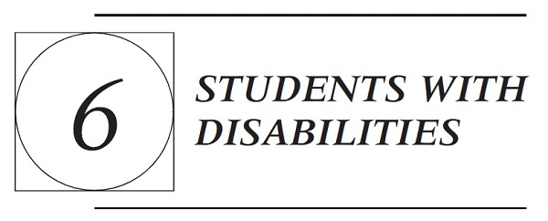

A. INTRODUCTION: THE HISTORY OF STUDENTS WITH DISABILITIES IN SCHOOLS AND MODERN STATUTORY PROTECTIONS
As recognized by the U.S. Congress, “disability is a natural part of the human experience and in no way diminishes the right of individuals to participate in or contribute to society. Improving educational results for children with disabilities is an essential element of our national policy of ensuring equality of opportunity, full participation, independent living, and economic self-sufficiency for individuals with disabilities.” 20 U.S.C. §1400(c)(1) (2006). But prior to the 1970s, disabled students were often entirely excluded from public schools, were warehoused in segregated schools for disabled students, or were not receiving appropriate educational services.
The recognition of African American students’ right to equal educational opportunity in Brown v. Board of Education laid the groundwork for disabled children to attain significant educational rights. Advocates for the disabled seized on the rationale of Brown to argue that children with disabilities were also entitled to equal access to the public schools. Two landmark decisions, Pennsylvania Ass’n for Retarded Children (PARC) v. Pennsylvania, 343 F. Supp. 279 (E.D. Pa. 1972), and Mills v. Board of Education of District of Columbia, 348 F. Supp. 866 (D.D.C. 1972), created the framework for modern statutes dealing with disabled students.
In PARC, plaintiffs sought to declare Pennsylvania’s statutes excluding retarded students from public education unconstitutional in violation of equal protection and due process protections. Relying on Brown, the court found the plaintiffs’ equal protection argument colorable because “the state, having undertaken to provide public education to some children (perhaps all children) [has no rational basis] to deny it to plaintiffs entirely.” 343 F. Supp. at 297. The court held that mentally retarded students should be provided access to a free public education and should be placed in regular classrooms when possible. The district court in Mills extended this doctrine to all students with disabilities, holding
that they must be provided with a free and adequate public education. “The defendants are required by the Constitution of the United States…to provide a publicly-supported education for these ‘exceptional’ children. Their failure to fulfill this clear duty to include and retain these children in the public school system, or otherwise provide them with publicly-supported education, and their failure to afford them due process hearing and periodical review, cannot be excused by the claim that there are insufficient funds.” 348 F. Supp. at 876.
These landmark decisions are more notable for their historical importance than their constitutional underpinnings. They laid the historical and theoretical foundation for the expansive statutory protections for students with disabilities that Congress would pass shortly thereafter. In 1973, Congress enacted §504 of the Rehabilitation Act prohibiting discrimination against handicapped persons in programs receiving federal funds. In 1990, the antidiscrimination protections of §504 were extended to many areas of the private sector, such as employment, public accommodations, and transportation through the Americans with Disabilities Act (ADA).
The antidiscrimination mandate of §504 set the stage for the more significant affirmative obligations of schools toward students with disabilities mandated in the Education for All Handicapped Children Act of 1975 (EAHCA). The EAHCA “incorporated the major principles of the right to education cases,” particularly the PARC and Mills decisions, and relied on Brown as establishing the principle of equal educational opportunity. S. Rep. No. 94-168, at 6, 8 (1975), reprinted in 1975 U.S.C.C.A.N. 1425, 1430, 1432; Bd. of Educ. v. Rowley, 458 U.S. 176, 180 n.2 (1982). The EAHCA was reauthorized and renamed numerous times, most recently in 2004 as the Individuals with Disabilities Education Improvement Act (IDEA). Pub. L. No. 108-446, 118 Stat. 2647, §601(c)(12) (codified as amended at 20 U.S.C. §§1400-1482). The IDEA requires that states provide significant substantive rights and procedural protections to students with disabilities in exchange for federal funding. Congress promised to fund 40 percent of the excess costs of educating eligible students. The IDEA is the second largest federal program in education, providing states and districts with approximately $12 billion each year to serve about 6 million children with disabilities nationwide. While this figure is large, Congress has never fully funded the IDEA, and it covers less than 20 percent of the excess cost of educating students with disabilities.
These three laws—§504, the ADA, and the IDEA—provide the primary legal protections available for students with disabilities. Of these three, the IDEA has the largest impact on public schools because of the complex system of legal rights created by the statute, implementing regulations, and jurisprudence. This chapter focuses primarily on the IDEA because of this complexity and because schools are frequently involved in litigation concerning their IDEA obligations.
B. ELIGIBILITY FOR PROTECTION
Whether a student is eligible for protection under the IDEA, §504, or the ADA is determined by statutory definitions. This section begins by explaining these
statutory definitions and ends with one of the most troubling and long-standing eligibility issues—minority overrepresentation in special education.
1. Statutory and Regulatory Requirements
A quick reading of the IDEA, its regulations, and its predecessor statutes may lead to the conclusion that all children with medically certified disabilities are IDEA eligible because the law is replete with statements that “all children with disabilities” should be served. Despite the sheer quantity of references to “all” disabled children, and the rhetoric in the case law and legislative history, it is beyond dispute that not all children diagnosed with disabilities are IDEA eligible. Rather, an eligible “child with a disability” is defined as a child
(i) with intellectual disabilities, hearing impairments (including deafness), speech or language impairments, visual impairments (including blindness), serious emotional disturbance…, orthopedic impairments, autism, traumatic brain injury, other health impairments, or specific learning disabilities; and
(ii) who, by reason thereof, needs special education and related services.
20 U.S.C.A. §1401(3)(A) (2012); 34 C.F.R. §300.8(c)(1)-(13) (2015). These apparently simple provisions are in fact among the most complex requirements of the IDEA.
The first requirement is that a child must have an enumerated disability. But a disability is not qualifying and eligibility does not attach, despite a medical diagnosis, unless the disability “adversely affects a child’s educational performance.” Accordingly, to fulfill the first prong of eligibility, a child must show the existence of an enumerated disability and that the disability adversely affects his or her educational performance.
The second prong requires that the child must need special education and related services. The IDEA defines “special education” as the adaptation of the content, methodology, or delivery of instruction to address a child’s unique needs and to ensure access to the general curriculum. 34 C.F.R. §300.39(b)(3). “Related services,” on the other hand, are “transportation, and such developmental, corrective, and other supportive services…as may be required to assist a child with a disability to benefit from special education.…” 20 U.S.C.A. §1401(26). Specific examples include “speech-language pathology and audiology services,…psychological services, physical and occupational therapy, recreation, including therapeutic recreation, social work services,…counseling services, including rehabilitation counseling, orientation and mobility services, and medical services.…” If a child needs only “related services” and not “special education,” then the child is not eligible. 34 C.F.R. §300.8(a)(2)(i); Irving Indep. Sch. Dist. v. Tatro, 468 U.S. 883, 894 (1984).
Not all children with medically diagnosed impairments will satisfy this two-part eligibility test and will not be eligible for IDEA services. Many chronic health problems such as cancer and diabetes do not fit within the enumerated disability categories. Other children may have an enumerated disability but not need
special education and related services. A child with cystic fibrosis may need respiratory therapy, a child with spina bifida may need catheterization services, and a child with an orthopedic impairment may need mobility services, but these services are not “special education,” and these children are not eligible under the IDEA.
But children who are not eligible under the IDEA may still receive protection under §504 and the ADA, which prohibit discrimination against “qualified individuals with a disability.” Both §504 and the ADA provide that “disability” means, with respect to an individual, “(A) a physical or mental impairment that substantially limits one or more of the major life activities of an individual; (B) a record of such an impairment; or (C) being regarded as having such an impairment.” 42 U.S.C. §12102(2) (2006); 29 U.S.C. §705(20)(B) (2006). Learning is considered a major life activity. The statutes both define a “qualified individual with a disability” as “an individual with a disability who, with or without reasonable accommodations…or the provision of auxiliary aides and services, meets the essential eligibility requirements for the receipt of services or the participation in programs or activities provided by a public entity.” 42 U.S.C. §12131; 34 C.F.R. §104.3(l)(3).
Unlike the IDEA, eligibility is not conditioned on a need for special education and related services. Instead, a qualified individual with a disability is a person whose disability can be reasonably accommodated. This broad definition is the reason many more children are §504 and ADA eligible than are IDEA eligible. As discussed below, whether a child is eligible under §504 or the IDEA is critical because the IDEA demands a higher level of services and procedural protections than §504 or the ADA.
a. Educational Performance
IDEA eligibility initially hinges on the existence of a disability that adversely affects the child’s “educational performance,” yet the IDEA does not define the term. Courts are divided on its meaning. The next case and the following notes exemplify the broad and narrow interpretations of “educational performance.”
Doe ex rel. Doe v. Board of Education of Connecticut
753 F. Supp. 65 (D. Conn. 1990)
Ellen B. Burns, Chief Judge.
The plaintiff attended regular classes and participated in the gifted program in Darien public schools from kindergarten through fifth grade. He did well academically in school during this time, although there is evidence in the record from which to conclude that he was sometimes difficult. These behavior problems do not appear to have been severe. However, in January, 1987 in his sixth grade, John [refused to go to school and] had emotionally deteriorated to the extent that his parents found it necessary to hospitalize him. His condition at this
time [was] depressed and violent. [On release, John’s parents placed him at the Grove School, a residential treatment facility, and sought tuition reimbursement from the district. The district refused, arguing that John was not a qualified student with a disability. The parents filed for an administrative hearing with a due process officer contesting the eligibility determination, and the hearing office ruled that John was not IDEA eligible.]
The plaintiff claims that he was a “socially and emotionally maladjusted child,” and an “exceptional child,” in need of special education at a residential facility. At the hearing, the plaintiff offered testimony from his treating psychiatrist at the Grove School and the director of the Grove School to demonstrate his emotional disturbance and his need for a residential placement. His psychiatrist, Dr. Tessler, testified that in his opinion the plaintiff was an exceptional child and a socially and emotionally maladjusted child. He testified that John felt very pressured and could be aggressive and destructive to other children. He further testified that the diagnosis of major depression applied to the plaintiff. Dr. Tessler testified that a residential facility like the Grove School was essential for John. Mr. Chorney, the Director of the Grove School, similarly testified to John’s need for a residential placement. He described the plaintiff’s temper outbursts at the Grove School, which progressively became less frequent. As previously stated, John’s parents both testified to the difficulties he had before being hospitalized. John’s records from the Grove School indicate that, although he did well academically, he had some behavior problems during the 1987–88 school year. Teacher comments indicate that he was at times provocative, argumentative, distracted, uncooperative, and made self-deprecating comments.
Despite the evidence of the plaintiff’s behavioral difficulties, this court concludes for the following reasons that he was not a handicapped child entitled to special education. The plaintiff had some emotional difficulties, but these difficulties did not adversely affect his educational performance as required by federal and state law. The plaintiff’s academic performance (both his grades and his achievement test results) before, during, and after his hospitalization were satisfactory or above. In addition, two of the plaintiff’s sixth grade teachers from Darien testified that they did not notice the plaintiff had any behavior problems, other than some problems with organization. In fact, [the] psychological evaluation states “it does not appear that [John’s] behavioral difficulties in school have contributed to academic underachievement, the very preoccupation which consumes his conscious ideation.” On cross-examination at the hearing, [John's doctor] agreed with this conclusion. [He] further stated on cross-examination that “[u]p to now, he has been able to do remarkably well [in school] despite his depression.” Mr. Chorney similarly testified on cross-examination that John liked school, liked succeeding, and that his emotional problems had not significantly interfered with his academics. [Another doctor] stated that he did not believe John’s behavior was interfering with his learning. In sum, there was sufficient evidence presented to the state hearing officer from which she reasonably concluded that the plaintiff’s education was not significantly impeded or adversely affected by his behavior problems and that he was therefore not entitled to special education. Hence, the hearing officer did not
misapply Connecticut law, nor did the hearing officer’s decision deny the plaintiff his right to a “free and appropriate education.”
NOTES AND QUESTIONS
1. Other approaches. In Mary P. v. Illinois State Board of Education, 919 F. Supp. 1173 (N.D. Ill.), amended by 934 F. Supp. 989 (N.D. Ill. 1996), a student with a speech impairment was performing at an age-appropriate educational level but had difficulty communicating. The Level 2 hearing officer “determined that an adverse effect on educational performance must include an effect on age-appropriate academic performance. In essence, he found the two terms synonymous.” Id. at 1176. The district court overturned this decision and held:
“Educational performance” means more than a child’s ability to meet academic criteria. It must also include reference to the child’s development of communication skills, social skills, and personality, as the Code, itself, requires. Whether the balance of these factors tips towards eligibility depends on the manner in which the specific disability afflicts the student. Today, the court simply holds that a child whom experts determine suffers from a speech impairment so severe as to inhibit his ability or desire to communicate with his teachers and peers meets the criteria of “speech impairment” which “adversely affects the child’s educational performance”…and, thus, is a “child with a disability.” Accordingly, the court finds that Michael is “a child with a disability” and eligible for services under the IDEA.
Id. at 1180-1181.
2. Different standards or different facts? Did the Mary P. and Doe courts reach different conclusions because one dealt with a student’s inability to effectively communicate and the other dealt with a student’s social deficits and ability to attend school? Put differently, is communication essential to educational performance, but socialization and attendance are not? Courts and hearing officers have held in contexts other than speech language impairments that “educational” performance includes more than just academic performance. For a summary of cases defining educational performance, see Robert A. Garda, Jr., Untangling Eligibility Requirements Under the Individuals with Disabilities in Education Act, 69 Mo. L. Rev. 441 (2004).
3. Sources for defining educational performance. The IDEA expressly allows states to define “educational performance” for students with disabilities. In J.D. ex rel. J.D. v. Pawlet School District, 224 F.3d 60 (2d Cir. 2000), the Second Circuit denied eligibility to a child having “difficulty with interpersonal relationships and negative feelings” because these were not included in Vermont’s regulations defining “educational performance” for students with disabilities. But what if the state does not define “educational performance” in its regulations regarding students with disabilities? What sources should be consulted to determine the purposes of education? In Doe and Mary P., the courts seem to impose their own views of what should and should not be part of “educational performance.” Some decision makers use the dictionary to define “educational performance,” In re Kristopher H., 507 EHLR 183, 187 (Wash. SEA 1985), while others attempt to glean a federal definition from the evaluation provisions of
the IDEA, Greenland Sch. Dist. v. Amy N., No. CIV. 02-136-JD, 2003 WL 1343023 (D.N.H. Mar. 19, 2003); Q.W. v. Bd. Of Educ. Of Fayetteville County, 630 Fed. Appx. 580 (6th Cir. 2015) (holding that high functioning autistic student was not eligible, even though “educational performance” encompasses more than academic achievement, because student’s poor at-home behavior did not occur at school). Should courts be attempting to define the purposes of education?
b. “Need” Special Education
Once it is established that a child has an enumerated disability, the issue becomes whether “by reason thereof, the child needs special education and related services.” The IDEA contains no explicit guidelines for determining whether a student with an impairment needs special education, and decision makers are divided on the issue. Many authorities find that a child “needs” special education merely because the child can benefit from it. See, e.g., Conrad Weiser Area Sch. Dist. v. Dep’t of Educ., 603 A.2d 701, 702, 705 (Pa. Commw. Ct. 1992). This can result in high-performing gifted children being found eligible despite outperforming their nondisabled peers. Benjamin R., 508 EHLR 183, 185 (Mass. SEA 1986). But most authorities reject this benefit standard and instead consider the child’s current performance level when ascertaining whether a child “needs” special education. These authorities diverge, however, on whether a child must be failing before a “need” is found, or whether a child passing from grade to grade but performing below average can be found in “need” of special education. For example, in Kelby v. Morgan Hill Unified School District, 959 F.2d 240, 241 (9th Cir. 1992) (unpublished table opinion), available at 1992 WL 67857, the court denied eligibility to a child with “poor grades, behavior problems and inconsistent work habits” because the child was passing from grade to grade. But in Blazejewski ex rel. Blazejewski v. Board of Education of Allegany Central School District, 560 F. Supp. 701, 705 (W.D.N.Y. 1983), the court found the child eligible despite passing from grade to grade because “he is achieving rather low marks in certain basic courses [and]…he lacks many of the basic survival skills needed to function in the outside world.” Should a child that can benefit from special education fulfill the “need” requirement?
c. “Special Education”
Many decision makers ignore the requirement that a child must need “special education and related services” to be IDEA eligible and presume that a disability that adversely affects educational performance requires remediation through “special education.” See, e.g., Muller v. East Islip Union Free Sch. Dist., 145 F.3d 95, 100 (2d Cir. 1998). This presumption is incorrect because a child’s disability may often be appropriately addressed by services that are not “special education.” Children with enumerated disabilities often need only “related services” or “accommodations” to address their needs and are not eligible for services under the IDEA. But the broad and ambiguous definition of “special
education”—“adapting” of the “content, methodology or delivery of instruction” to “address the unique needs of the child” and “ensure access of the child to the general curriculum”—leads to inconsistency in its application. Many courts and hearing officers find that any modification to content, no matter how slight, is “special education,” while others find children in need of only minor curriculum modifications provided to nondisabled students are not eligible. Compare Yankton Sch. Dist. v. Schramm, 93 F.3d 1369, 1375 (8th Cir. 1996), with Mountain Empire Unified Sch. Dist., 36 IDELR 29 (Cal. SEA 2001). Decision makers also cannot agree on whether modified assignments are an adaptation to teaching method and therefore “special education.” Compare Greenland Sch. Dist. v. Amy N., No. Civ. 02-136-JD, 2003 WL 1343023, at *8 (D.N.H. 2003), aff’d on other grounds, 358 F.3d 150 (1st Cir. 2004), with Long Beach Unified Sch. Dist., 33 IDELR 113, 119 (Cal. SEA 2000). Authorities subscribing to a broad definition—that any adaptation to the general education environment qualifies—find support in the definition of “special education,” which suggests that any adaptation of content, method, or delivery is special education. Decision makers adopting a narrow view—that only significant and unique adaptations qualify—find support in the definition of “special education,” which requires that the adaptations be made to meet the unique needs of the child, as opposed to the generic needs of all students.
PROBLEM
Joe is an eighth-grade student with a medical diagnosis of Attention Deficit-Hyperactivity Disorder (ADHD). As a result of his ADHD, Joe has difficulty socializing with his peers and teachers and following instructions, particularly in group projects. He also acts out occasionally and must be removed from the classroom. Joe has missed several days of school due to the high stress levels caused by his classroom environment. Despite these problems, Joe has passed from grade to grade with mostly C’s. Joe’s doctor believes Joe needs counseling services, small-group instruction, corrective reading instruction, a behavior management plan for when Joe acts out in class, and extra assistance in group projects. Is Joe an eligible “child with a disability” entitled to receive services under the IDEA?
2. Minority Overrepresentation in Special Education
While Brown v. Board of Education laid the foundation for significant advances in the rights of minorities and students with disabilities, it also institutionally linked race and disability. As Daniel Losen and Professor Kevin Welner explain:
Once desegregation began in earnest…schools experienced a wave of second generation discrimination taking the form of tracking (also known as ability grouping), abuse of expulsions and suspensions, and special education placement in substantially separate classrooms. Early desegregation opinions reported widespread abuse involving minority students with
average and above-average IQ scores being relegated to isolated classes for mentally retarded students. This use of racially discriminatory special education placement to circumvent Brown’s mandate relied on at least two pervasive normative beliefs: the stereotypical belief of white intellectual superiority, and a well-grooved pattern of paternalism and animus toward people with disabilities. The predictable consequence of these beliefs was that many special education programs existed as segregated ghettos within public schools.
Daniel J. Losen & Kevin G. Welner, Disabling Discrimination in Our Public Schools: Comprehensive Legal Challenges to Inappropriate and Inadequate Special Education Services for Minority Children, 36 Harv. C.R.-C.L. L. Rev. 407, 434 (2001).
The practice of tracking and its impact on minorities was the issue in Hobson v. Hansen, 269 F. Supp. 401 (D.D.C. 1967), a case that predated the statutory protections for students with disabilities. In Hobson, African American schoolchildren challenged the use of a “tracking,” or ability-grouping system, wherein African American students dominated the lower tracks and white students were concentrated in the higher tracks. Judge Skelly Wright held that the racially disproportionate placement of African American students in the lower special education tracks denied these students equal educational opportunity. The court found that the standardized aptitude tests used to place students into the tracks were culturally biased and produced misleading and inaccurate test scores when given to poor African American students because the scores reflected the psychological impact of daily racism they experienced and not actual abilities. The court rejected implicit arguments of racial inferiority and found that the high rates of placement in educable mentally retarded (EMR) was the result of external forces of discrimination, not disabilities within the students themselves. The defendants argued that using standardized tests to place students in EMR classes enabled them to tailor educational programs to the individual learning needs of their students. The court gave little weight to this purported justification, finding instead that placement in the lower tracks limited the educational opportunities available to African American students.
Congress recognizes that minority overrepresentation in special education continues to be an intractable problem. 20 U.S.C. 1400(12)(A-E). Based on the most recent available data, American Indian/Alaska Native students were 1.56 times more likely to be served under the IDEA than students in all other racial/ethnic groups combined, and African American students were 1.46 times more likely. Asian/Pacific Islander students, white students, and Hispanic students were less likely to be served under the IDEA than students in all other racial/ethnic groups combined (0.51, 0.89, and 0.93, respectively). U.S. Dep’t of Educ., 30th Annual Report to Congress in the Implementation of IDEA (2008). Digging deeper into the statistics reveals more interesting trends. African Americans are only slightly disproportionately represented in the low-incidence disabilities—hearing impairments, visual impairments, orthopedic impairments, autism, traumatic brain injury, and other health impairments. These categories make up less than 2 percent of the overall IDEA-eligible population. These medical model or “nonjudgment” disabilities are clearly identifiable disorders subject to an objective and accurate diagnosis.
Rather, African Americans are disproportionately represented in the high-incidence categories of intellectual disabilities, severe emotional disturbance,
specific learning disability, and developmental delay. White students are underrepresented in these high-incidence categories, while Hispanics are overrepresented in the specific learning disability and intellectual disability categories, but underrepresented in the emotional disturbance category. The learning disability (LD) category requires special mention because roughly 45 percent of IDEA- eligible students fall under this category. African American students are 1.46 times more likely to be labeled LD than students in all other racial/ethnic groups and Hispanics are 1.19 more likely, whereas whites are only 0.77 times as likely and Asian/Pacific Islanders are 0.39 times as likely. LD, and all the high-incidence disabilities, are “social system” or “judgmental” disabilities that are not biologically based; there is no uniform test to determine their presence or agreement on how to diagnose them, and their definitions are open to broad discretion in application.
While there is general agreement as to the existence and nature of minority overrepresentation in special education, particularly African American overrepresentation, there is great controversy about its causes. This was the primary dispute in Hobson: whether African Americans were not “overrepresented” but instead had a higher incidence of actual disability or whether testing bias, teacher bias, and poor education were the primary reasons for overrepresentation. This issue has proven timeless, as the debate still rages over the causes of minority overrepresentation in special education. See, e.g., Morgan et.al., Minorities are Disproportionately Underrepresented in Special Education: Longitudinal Evidence Across Five Disability Categories, Educational Researcher (June 24, 2015) (finding that when minority children’s greater exposure to factors that increase the risk for disabling condition are taken into account, minority students are underrepresented in special education).
a. Bias in Testing
Standardized testing, particularly IQ tests, continue to play a prominent role in the identification of children as disabled under the IDEA. In the next case, the court invalidated California’s use of IQ tests to place students in classes for the mentally retarded because it led to African American overrepresentation in the classes.
Larry P. v. Riles
793 F.2d 969 (9th Cir. 1984)
Poole, Circuit Judge:
The State Superintendent of Public Instruction appeals a decision holding that IQ tests used by the California school system to place children into special classes for the educable mentally retarded (E.M.R.) violated [Title VI of the Civil Rights Act, the Rehabilitation Act, and the Education for All Handicapped Children Act] and the equal protection clauses of the United States and California Constitutions. The district court enjoined the use of non-validated IQ tests, and
ordered the state to develop plans to eliminate the disproportionate enrollment of black children in E.M.R. classes. We affirm on the statutory grounds and reverse on the federal and state constitutional issues.
II. Facts
In the mid-60’s California created programs for several categories of students with educational problems. The “educable mentally retarded” (E.M.R.) Program was for schoolchildren of retarded intellectual development who are considered incapable of being educated through the regular educational program, but who could benefit from special educational facilities to make them economically useful and socially adjusted. The “trainable mentally retarded” (T.M.R.) category was for children with more severe retardation than educable mentally retarded.
The E.M.R. classes are for children who are considered “incapable of learning in the regular classes,” and the E.M.R. curriculum “is not designed to help students learn the skills necessary to return to the regular instructional program.” The E.M.R. classes are designed only to teach social adjustment and economic usefulness. “The [E.M.R.] classes are conceived of as ‘dead-end classes,’ ” and a misplacement in E.M.R causes a stigma and irreparable injury to the student.
From 1968 until trial in 1977 black children have been significantly overenrolled in E.M.R. classes. For example, in 1968-69, black children were about 9% of the state school population, yet accounted for 27% of the E.M.R. population.
These apparent overenrollments could not be the result of chance. For example, there is less than a one in a million chance that the overenrollment of black children and the underenrollment of non-black children in the E.M.R. classes would have resulted under a color-blind system. To explain this overenrollment, the defendants proffered a theory that there is a higher incidence of mental retardation among the black population. The district court found that this theory fails to account for the problem, because even “if it is assumed that black children have a 50 percent greater incidence of this type of mental retardation, there is still less than a one in 100,000 chance that the enrollment could be so skewed towards black children.”
On the average, black children score fifteen points, or one standard deviation, below white children on standardized intelligence test. Thus “approximately two percent of the total population fall below the [E.M.R. cutoff], while about 15 percent of black children fall below that level.”
The court found that “the tests were never designed to eliminate cultural biases against black children; it was assumed in effect that black children were less ‘intelligent’ than whites. The tests were standardized and developed on all-white population, and naturally their scientific validity is questionable for culturally different groups.” Since the 1920’s it has been generally known that black persons perform less well than white persons on the standardized intelligence tests. IQ tests had been standardized so that they yielded no bias because of sex. For example, when sample tests yielded different scores for boys and girls,
the testing experts assumed such differences were unacceptable and modified the tests so that the curve in the standardization sample for boys and girls was identical. No such modifications on racial grounds has ever been tried by the testing companies. The district court noted that “the experts have from the beginning been willing to tolerate or even encourage tests that portray minorities, especially blacks, as intellectually inferior.” The district court found the assumptions underlying the genetic argument highly suspect, and in any event that the defendants “were unwilling to admit any reliance on [this theory] for policy-making purposes.”
The second theory is the socioeconomic argument, which theorizes that because of blacks’ lower socioeconomic status, they are at a greater risk for all kinds of diseases due to malnutrition and poor medical attention. The district court found that the facts did not support this theory, since it did not explain why more severe mental retardation, e.g. that consistent with placement into classes for the trainable mentally retarded children, does not occur in greater proportions among blacks and poorer sections of the population.
The district court found that the appellants failed to show that the IQ tests were validated for blacks with respect to the characteristics consistent with E.M.R. status and placement in E.M.R. classes, i.e., that the defendants failed to establish that the IQ tests were accurate predictors that black elementary schoolchildren who scored less than 70 were indeed mentally retarded.
The district court found that alternatives to IQ testing for E.M.R. placement have been in effect since the state moratorium on IQ testing in 1975. These procedures, in which schools take more time and care with their assessments for E.M.R. classification and rely more on observational data, are less discriminatory than under the IQ-centered standard.
The district court found that defendants were guilty of intentional discrimination in the use of the IQ tests for E.M.R. placement. The court based this determination on the facts that the historical background of the IQ tests shows cultural bias; the adoption of the mandatory IQ testing requirement in 1969 was riddled with procedural and substantive irregularities, in which no outside sources were consulted by the State Board and the question of bias was never considered, even though the officials were well aware of the bias and disproportionate placement problems caused by the IQ tests (this problem having been addressed in a legislative resolution); the defendants’ “complete failure to ascertain or attempt to ascertain the validity of the tests for minority children”; and the failure of the state to investigate and act on legal requirements to report significant variances in racial and ethnic composition in E.M.R. classes. The court noted that “the SDE’s actions revealed a complacent acceptance of those disproportions, and that complacency was evidently built on easy but unsubstantiated assumptions about the incidence of retardation or at least low intelligence among black children.”
VI. Rehabilitation Act
Congress was clearly concerned with the misclassification of students as retarded. The Senate Report for the Rehabilitation Act states that “racial and
ethnic factors may contribute to misclassification as mentally retarded.” The Senate Report states that “[the Committee] is deeply concerned about practices and procedures which result in classifying children as having handicapping conditions when, in fact, they do not have such conditions.”
The Education For All Handicapped Children Act specifically requires that tests and evaluation procedures be free of racial and cultural bias. Both the EAHCA and the Rehabilitation Act require that the tests used for evaluation be validated for the specific purpose for which they are used, and that placement not be based upon a single criterion but on a variety of sources.
Appellant argues that the IQ tests were validated for the specific purposes for which they are used. Appellant analogizes to Title VII cases, notably Washington v. Davis, 426 U.S. 229 (1976), for the proposition that tests that are valid predictors of future performance can be utilized even if they have a discriminatory impact. There are two problems with appellant’s proposition. First, the employment context is quite different from the educational situation. As the district court stated, “tests can predict that a person is going to be a poor employee, the employer can legitimately deny that person a job, but if tests suggest that a young child is probably going to be a poor student, the school cannot on that basis alone deny that child the opportunity to improve and develop the academic skills necessary to success in our society.” Assigning a student to an E.M.R. class denies that child the opportunity to develop the necessary academic skills, since E.M.R. classes do not teach academic subjects and are essentially a dead-end academic track. Second, and more important, the question for predictive validity in schools is not whether the standardized intelligence tests predict future school performance generally, as appellant argues, but whether the tests predict specifically that black elementary schoolchildren (as opposed to white elementary schoolchildren) who score at or below 70 on the IQ tests are mentally retarded and incapable of learning the regular school curriculum. In this case, the appellant would have to have shown that the tests are a proven tool to determine which students have characteristics consistent with E.M.R. status and placement in E.M.R. classes, i.e., “whose mental capabilities make it impossible for them to profit from the regular educational programs” even with remedial instruction. The regulations place the burden of showing such validation on the defendants.
The district court found that defendants failed to show that the tests were validated for placing black students with scores of 70 or less in E.M.R. classes. The district court noted that very few studies had examined the difference of IQ predictability for black as compared to white populations, and that those studies which had examined this problem found the tests much less valid for blacks than for whites. Further, the district court found that, even assuming the tests were validated for placement of white schoolchildren in E.M.R. classes, such validation for blacks had been generally assumed but not established. In addition, no studies have been made, either by the defendants or the testing companies, to investigate the reasons for the one standard deviation difference in test scores between the races or to determine whether test redesign could eliminate any bias. There was expert testimony that a much larger percentage of black than white children had been misplaced in E.M.R. classes. Based on the evidence in
the record, the district court finding that the appellant had not established validation of the test is not clearly erroneous.
The district court also found that the appellant did not utilize the variety of information required by statute and regulation to make E.M.R. placements, but relied primarily on the IQ test. This finding also is not clearly erroneous.
Since the appellant has not shown that these findings are clearly erroneous, we affirm the district court’s holding that the defendants violated the provisions of the Rehabilitation Act and the Education For All Handicapped Children Act (1) by not insuring that the tests were validated for the specific purpose for which they are used, and (2) by not using the variety of statutorily mandated evaluation tools.
VII. Title VI
Title VI of the Civil Rights Act of 1964 provides that “No person in the United States shall, on the ground of race, color, or national origin, be excluded from participation in, be denied the benefits of, or be subjected to discrimination under any program or activity receiving federal financial assistance. Regulations issued under [Title VI] require that recipients of federal funding may not “utilize criteria or methods of administration which have the effect of subjecting individuals to discrimination because of their race, color, or national origin, or have the effect of defeating or substantially impairing accomplishment of the objectives at the program as respect individuals of a particular race, color, or national origin.
In Guardians Association v. Civil Service Commission or City of New York, 463 U.S. 582 (1983), a majority of the Court held that a violation of Title VI required proof of discriminatory intent. A different majority held, however, that proof of discriminatory effect suffices to establish liability when the suit is brought to enforce regulations issued pursuant to the statute rather than the statute itself. The appellees relied on the regulations issued pursuant to Title VI. The lower court held that the placement mechanisms for E.M.R. classes operated with a discriminatory effect in violation of the regulations and HEW’s “interpretative guidelines.” In light of appellees’ reliance on the regulations, we find it appropriate to apply a discriminatory effect analysis.
A prima facie case is demonstrated by showing that the tests have a discriminatory impact on black schoolchildren. Once a plaintiff has established a prima facie case, the burden then shifts to the defendant to demonstrate that the requirement which caused the disproportionate impact was required by educational necessity.
Appellees clearly demonstrated the discriminatory impact of the challenged tests. The burden therefore shifted to the defendants to demonstrate that the IQ tests which resulted in the disproportionate placement of black children were required by educational necessity.
Appellant argues first that E.M.R. classes are a benefit for, rather than adverse discrimination against, black children, implying that appellees did not even establish a prima facie case. However, the district court found that improper placement in E.M.R. classes has a definite adverse effect, in that
E.M.R. classes are dead-end classes which deemphasize academic skills and stigmatize children improperly placed in them. Even appellant’s witnesses testified that it would be extremely improper for a non-mentally retarded child to be placed in an E.M.R. classroom. Though the E.M.R. class might be a benefit for those students who are educable mentally retarded, it is clearly damaging to a non-retarded student to be placed in those classes. The district court’s finding is not clearly erroneous, and thus appellees established a prima facie case of a Title VI violation based upon discriminatory effect.
Appellant next argues that even if the impact is adverse, it is not caused by discriminatory criteria (the IQ tests), but by other nondiscriminatory factors: (1) placement is based on a variety of information and evaluation tools that are non-discriminatory, and not solely on the IQ tests; (2) the tests are validated for black schoolchildren, and therefore accurately reflect mental retardation in black children; and (3) blacks have a higher percentage of mental retardation than whites.
Appellant’s first two arguments have been discussed supra, and are unavailing. Appellant’s third argument is that the disproportionate number of black children in E.M.R. classes is based on a higher incidence of mental retardation in blacks than in whites that is due to poor nutrition and poor medical care brought on by the lower socioeconomic status of blacks. This argument also fails. The district court specifically found the testimony of appellant’s experts in support of this argument failed to explain why more severe mental retardation does not occur in greater proportions among the poorer sections of the population. [T]he district court did not err in holding that the defendants violated Title VI by utilizing these IQ tests for placement into E.M.R. classes.
VII. Equal Protection Violation
We cannot, however, sustain the finding of a violation by Superintendent Riles of the equal protection clause of the fourteenth amendment on the theory that the pervasiveness of discriminatory effect can, without more, be equated with the discriminatory intent required by Washington v. Davis. Accordingly, we reject these facts of the trial court and reverse the conclusions that the Superintendent was guilty of intentional discrimination under the fourteenth amendment.
NOTES AND QUESTIONS
1. PASE v. Hannon. Despite remarkably similar facts and legal issues, the district court in Parents in Action on Special Education (PASE) v. Hannon, 506 F. Supp. 831 (N.D. Ill. 1980), held that use of IQ tests to disproportionately place African American students into EMR courses did not violate §504, the IDEA, or Title VI. The court, after conducting a question-by-question analysis on the two relevant exams, held that plaintiffs failed to prove that the tests were culturally biased. Rather, the court found that racial disparities were the result of higher levels of poverty among African American children. In reaching this conclusion, the court rejected plaintiffs’ expert witness testimony that
socioeconomic differences could not possibly cause such a high level of mental retardation. The PASE court, unlike the Larry P. court, concluded that IQ scores were only one factor that entered into the assessment and rejected plaintiffs’ theory that a student’s IQ score had a “hypnotic effect” on the participants in the evaluation process.
Can the Hannon and Larry P. decisions be reconciled? Is it true, as the court in Hannon concluded, that the parties in Larry P. did not dispute whether IQ tests were racially and culturally biased? Or do these two courts merely look at the evidence to prove bias differently, with the Larry P. court finding disparate IQ tests results establish bias while the Hannon court required bias in the test questions? Claims that standardized tests are biased are not simply an interesting historical footnote; they persist today. See, e.g., NAACP Complaint to the Office of Civil Rights (Sept. 28, 2012), available at http://www.naacpldf.org/files/case_issue/Specialized%20High%20Schools%20Complaint.pdf (claiming that the admissions process for New York City’s elite public high schools hinging exclusively on a biased standardized test that results in significant underrepresentation of Latinos and African Americans violates Title VI of the Civil Rights Act of 1964).
Tracking programs have often been upheld despite resulting in overrepresentation of minorities in the lower tracks. People Who Care v. Rockford Bd. of Educ., 111 F.3d 528 (5th Cir. 1995); Quarles v. Oxford Mun. Separate Sch. Dist., 868 F.2d 750, 754-755 (5th Cir. 1989). These cases, however, did not involve disability claims.
2. Later developments in Larry P. The district court in Larry P. prohibited the use of IQ tests to evaluate black students for placement only in EMR classes. In 1986, the court modified the Larry P. injunction to prohibit the use of IQ tests to classify black students in all disability categories. The modification was challenged in 1986 by black students seeking IQ testing to establish that they had a severe discrepancy between achievement and intellectual ability eligibility and were eligible as learning disabled. The Ninth Circuit vacated the 1986 modification as unsupported by the factual findings in Larry P. Crawford v. Honig, 37 F.3d 485 (9th Cir. 1995). The Ninth Circuit acknowledged that Larry P. was about “the racial and cultural biases in IQ tests and the lack of scientific validation for the tests for culturally and racially different groups,” but concluded that “the focus of the district court’s inquiry was the disproportionate enrollment of African-American children in dead-end E.M.R. classes, not the use of IQ tests generally.” Id. at 488. If IQ tests are racially and ethnically biased for purposes of determining whether a child is mentally retarded, are they also not problematic for determining that a child is learning disabled? Was the real issue in Larry P. that EMR classes were considered dead-end classes?
3. Discriminatory effect. The primary disagreement between the majority and the dissent in Larry P. was whether plaintiffs had established that IQ tests had an impermissible discriminatory effect under Title VI. The Supreme Court has since held that there is no private right of action to enforce disparate impact regulations promulgated under Title VI, meaning discriminatory intent must be established. Alexander v. Sandoval, 532 U.S. 275 (2001). Professors Losen and
Welner, supra, suggest that Title VI claims could be linked with either §1983 claims or §504 and IDEA claims to avoid the Sandoval prohibition. If remedies can be obtained for minority overrepresentation under the IDEA and §504, what benefits are there to bringing a Title VI claim? One reason may be that broader-based remedies affecting practices in general education are available under Title VI. Another, more important reason may be the difficulty in proving that standardized tests are biased without utilizing a disparate impact analysis. Considering that the IDEA imposes significant affirmative obligations to serve students with disabilities and is not merely an antidiscrimination statute like Title VI, should private plaintiffs be allowed to prove violations through disparate impact analysis?
4. Testing bias or innate differences in abilities? Both the Hannon and Larry P. courts summarily rejected the idea that innate differences between the races may explain the differences in IQ test scores. Both courts also noted that if the defendants had raised this defense, it would have been proof of intentional discrimination. The debate as to innate genetic differences in intelligence between the races lives even today. In 1994, the controversial book The Bell Curve: Intelligence and Class Structure in American Life by Richard J. Herrnstein and Charles Murray resurrected the genetic inferiority argument of the eugenics era out of America’s subconscious and into the mainstream media, sparking heated debates about whether different racial groups had different innate mental abilities. The critics of Professors Herrnstein and Murray acknowledge a black-white gap in IQ tests scores but allege the source of the gap is environmental and not genetic or hereditary. They point to studies showing that black children adopted by white parents have higher IQs than black children adopted by black families, that children of black GIs in Germany have nearly identical scores to children of white GIs in Germany, and that educational interventions improve IQ scores to argue that environmental factors are the sole determinant of IQ scores. See, e.g., Richard E. Nisbett, A Commentary on Rushton and Jensen, 11 Psychol. Pub. Pol’y & L. 302, 303-307 (2005). The critics acknowledge that the IQ tests may not be racially biased, as was found in Hannon, but they do not reflect what individuals may be capable of under different circumstances. See, e.g., Robert J. Sternberg, There Are No Public Policy Implications: A Reply to Rushton and Jensen, 11 Psychol. Pub. Pol’y & L. 295, 299 (2005). Yet other research shows that “stereotype threat” may play a significant role in depressing minority scores on standardized tests. Studies have shown that if a student knows he is expected to perform poorly on a test because of negative stereotypes related to his or her social group, then the student will perform poorly due to anxiety. Claude Steele & Joshua Aronson, Steele, Stereotype Threat and the Intellectual Test Performance of African Americans, 69 J. Personality & Soc. Psych. 797 (1995). Finally, critics also argue that race is a social construction and not a biological concept. Contemporary science discredits the notion of “race” as a biological or genetic category because there is no identifiable set of genes distinguishing the races. See Richard S. Cooper et al., Race and Genetics, 348 New Eng. J. Med. 1166, 1168 (2003); Sharona Hoffman, Is There a Place for “Race” as a Legal Concept?, 36 Ariz. St. L.J. 1093 (2004). A “black” person may have more in common
genetically with a “white” person than with another “black” person. See Ashley Montagu, Man’s Most Dangerous Myth: The Fallacy of Race (1997); Nisbett, supra at 304.
b. Socioeconomic Factors
A direct correlation between race and disability is disputed, but all agree that there is a strong correlation between race and poverty and poverty and disability. The courts in Larry P., Hannon, and Hobson recognized that poverty leads to biological and social deficits, which in turn lead to a higher need for special education among African Americans who are disproportionately underprivileged. The biological effects of poverty that contribute to an achievement gap in cognition and behavior include lower birth weight, poor nutrition, and increased exposure to toxins (e.g., lead, alcohol, tobacco, drugs), all of which correlate to educational performance. The social and environmental effects of poverty also contribute to African American students’ greater need for special education. Low-socioeconomic-status homes display less optimal educational environments, as they have less language stimulation, less direct teaching, higher incidences of maternal depression, lower-quality childcare, and less stimulating parenting practices. Professor Ryan thoroughly explains the recent neuroscience showing the dramatic affects poverty can have on children’s cognition and behavior. James Ryan, Poverty as a Disability and the Future of Special Education Law, 101 Geo. L.J. 1455 (2013). The result is a further separation between the socioeconomic classes in behavior and achievement upon entering school. Most significantly, as Judge Wright noted in Hobson, the inadequate education received by children from low-socioeconomic-status homes contributes to eligibility for special education. More African Americans attend substandard schools, and such schools create students that need special education.
But the unequal representation of minorities, particularly African Americans, in special education cannot be explained by socioeconomic factors alone. The court in Larry P. expressly rejected the argument that African American children were properly represented in special education courses because of their poverty levels. A similar argument was rejected in Hobson, wherein Judge Wright held that the placement of African American students in special education courses was the result of discrimination, and not actual disabilities within the students themselves. Overrepresentation persists even when poverty is taken into account, and African American students are in fact more likely to be identified as eligible in upper- and high-income schools. 20 U.S.C. §1400(c)(12)(E) (2006) (“schools with predominantly white students and teachers have placed disproportionately high numbers of their minority students into special education”); see also Robert Garda, Jr., The New IDEA: Shifting Educational Paradigms to Achieve Racial Equality in Special Education, 56 Ala. L. Rev. 1071 (2005). But see Morgan et al., Minorities are Disproportionately Underrepresented in Special Education: Longitudinal Evidence Across Five Disability Categories, Educational Researcher (June 24, 2015) (finding that when minority children’s greater exposure to factors that increase the risk for disabling condition are taken
into account, minority students are underrepresented in special education). The nature of African American overrepresentation also belies the conclusion that the negative biological, environmental, and educational effects of poverty account for the entire imbalance in special education. African American students’ extreme overrepresentation in the high-incidence or judgmental disabilities, but not in the low-incidence or nonjudgmental disabilities, indicates that factors independent of socioeconomic status and actual ability affect the eligibility process.
c. Bias in Eligibility Determination
Because innate differences between races and socioeconomic differences cannot explain minority overrepresentation in special education, bias may be the only explanation. Bias is not only present in the means by which children are assessed to have disabilities, but also in the means by which children are found eligible for special education. Recall that to be IDEA eligible, a child must be diagnosed with a disability, that disability must adversely affect educational performance, and the child must need special education. The Larry P., Hannon, and Hobson decisions dealt with bias in the assessment of a disability phase, but bias may also be present in the remaining steps of the eligibility determination. In the following excerpt, Professor Glennon argues that implicit bias permeates the entire eligibility process for minorities, from referral, to assessment to the final eligibility determination.
Theresa Glennon, Race, Education, and the Construction of a Disabled Class
1995 Wis. L. Rev. 1237
Special education presents a paradox. While it is designed to confer increased educational benefits, it also stigmatizes and severely limits educational opportunities. While many students benefit from placement in special education, students placed in special education may suffer the negative consequences of being labeled disabled by their teachers, peers, and themselves. Students’ learning difficulties are often understood as reflecting innate limitations, and not unsuccessful education programs. Teachers often have diminished expectations for students identified as disabled. Nondisabled peers tease or ostracize special education students. Moreover, placement in special education may diminish students’ self-esteem and lead to feelings of humiliation, alienation and failure.
Because special education students are often viewed as limited, school officials may not expect them to have the same goals and aspirations as other students. For this reason, special education programs often do not follow the regular curriculum. Reduced expectations may in turn lead to reduced achievement. Rather than providing special education students with the curriculum needed to obtain a “regular” high school diploma or attend college, schools
often track these students into low-skill vocational education programs. Few students ever fully rejoin the regular education program. If they do, they are likely to have lost academic ground in the process. Special education students drop out of school at a rate much higher than that of the general student population, and these students are more likely to face unemployment or arrest after leaving school.
Constructing Race and Disability
Like race, disability is a social construct. Disability is seen as an objective condition—the disability can be evaluated and diagnosed. [But] while some disabilities have a biological basis, others are completely based on social and cultural norms, rather than biology. Non-biologically based “disabilities”—such as mild mental retardation, learning disabilities, and serious emotional disturbance—are seen as the social assignment of deviancy to behavior that diverges from that expected in a certain setting. Thus, “[n]ormal behavior is role performance that conforms to the norms and expectations of the social system.”
These scholars argue that for many special education students identified as mildly mentally retarded, learning disabled, and seriously emotionally disturbed, there is no identification of a biological basis for the disability. Instead, the disability is diagnosed based on observed behavior and achievement test scores. These diagnoses, then, reflect social and cultural beliefs about appropriate learning and behavior in school. The fact that these students are often perceived as disabled only within the school environment highlights the socially constructed nature of these disabilities.
The Process Is Open to Distortion by Unconscious and Structural Racism
While greatly diminished, overt racism still finds a home in some public schools. However, school teachers and administrators usually do not perceive themselves to be racially prejudiced or engaged in overtly racist actions. Since overt racial hostility is the only definition of racism readily available to them, they would not see racial meaning in their actions. Unnoticed are the pervasive but more insidious effects of unconscious and structural racism, which are not limited to one moment, such as the use of culturally biased IQ tests, but pervade the school lives of African-American students and all aspects of their identification as disabled.
The effects of racism begin long before a teacher referral for evaluation is made. Given the structural links between poverty and racism, African-American children are less likely to have had quality health care and challenging preschool experiences prior to kindergarten. Even before entering elementary school, racism may have affected their self-image. These experiences may lead them to approach their new schools with less trust and self-confidence than many white children feel. They may also have less of the majority cultural knowledge by which they will be judged.
The sorting and labeling of students begins immediately upon starting school. The lens through which administrators view African-American children at their initial meeting may strongly affect initial placement decisions, long before special education is mentioned to parents. African-American children entering predominantly white school systems often confront cultural communication problems and diminished expectations. In poor, predominantly minority urban school systems, administrators may warily approach students who appear to be “unmanageable” in the large, understaffed classrooms they will be entering. The lens of unconscious racism affects even upper middle class African-American students attending private schools.
Once they are in school, the negative stereotypes of African-Americans as less capable, more disruptive, and even violent held by many teachers may provide a powerful heuristic for interpreting the everyday behavior and actions of black children. Studies show that even well-meaning teachers respond less favorably to the contributions and actions of African-American students than they do to those of white students. Practices that may be affected by unconscious racial bias include favoring some students to speak in class, or praising some students while ignoring the contributions of others. This heuristic affects teacher perceptions concerning every interaction, and may lead teachers to overreact to small disruptions by African-American students. Researchers have also found that teachers respond more negatively to students who are both African-American and poor. Teachers are more likely to want to remove African-American students from their classes to get rid of an uncomfortable problem.
These problems seem to be exacerbated when African-American students have white teachers. One study has shown that African-American students do better in school districts with larger proportions of black teachers. Teacher discomfort may be increased by real, unseen cultural differences when African-American students have white teachers. Since few schools have incorporated multicultural curricula or multicultural training for teachers, many student-teacher interactions are frustrated by cultural misunderstandings. These differences may affect learning and communication styles. For example, some researchers have found that some African-American students devote significant energy to the “stage setting” that precedes the performance of a task. However, white teachers often believe that these students are merely wasting time or not paying attention. These cultural misunderstandings may result in those teachers perceiving students to be oppositional or incapable of understanding what is required of them.
Where teachers see children as less capable because of the disadvantages caused by poverty, and factor that together with the perception that they are less capable because of their race, there is a heightened chance that they will be seen as disabled. Once a teacher believes that a child may be disabled, all of the institutional cues encourage the notion that the problem is with the child, not the school environment. Teachers may also believe that placement in special education may help a child who they are not sure is really disabled, but who needs more attention than they can provide. Because the dominant story is created by teachers and administrators, the official story that develops is of a
deviant and disabled child, not debilitating institutional practices. These practices preceding a referral for evaluation have received no attention from statutes and courts. Once the referral [for special education] is made, students enter a process that leaves tremendous room for discretion and the operation of racism. Narratives of unconscious and structural racism provide a broader basis from which to critique the false confidence with which IQ tests are used in the evaluation process. Because the IDEA’s regulatory definitions of disabilities contain broad language that leave tremendous discretion in interpretation, children with similar profiles may be given different classifications—or one may be found to be disabled while another is deemed to be just a little “slow.” The formation of an identity as disabled is powerfully affected by race. The label of disability becomes a way to remove children seen as difficult, or even a well-meaning but misguided method of getting students more resources. These accounts of unconscious and structural racism in schools should lead us to consider connections between the overrepresentation of African-American students in special education to other disturbing school practices, including racial disparities in student discipline, ability grouping and school financing.
NOTES AND QUESTIONS
1. Races other than African Americans. If cultural bias explains the disproportionate representation of African American students in special education, what explains the underidentification of Asian/Pacific Islanders or the lack or disproportionate representation of Hispanics in special education? Are teachers biased in favor of Asian/Pacific Islanders? Are the biases against Hispanics different from the biases against African Americans?
2. Change teachers or change students? Professor Glennon argues that the cultural disconnect between African American students and the white-centric values in the classroom, and particularly white teachers, is partially to blame for overreferral for special education. Should the classroom culture respond to the varied cultures of its students, or should the students be compelled to fit into a one-size-fits-all classroom culture? In other words, are students “disabled” if they cannot fit into a culture? In Brown v. Board of Education, the Supreme Court held that public education is the “principal instrument in awakening the child to cultural values.”
3. Eliminating bias. Is there any means by which racial and cultural bias can be eliminated from the classroom? If racial and cultural bias can be eliminated from the referral and assessment phase of eligibility determinations, will overrepresentation still persist? IQ tests are typically the only “objective” assessment to determine eligibility. As Judge Enright in his dissent in Larry P. noted, IQ tests were adopted to prevent subjective evaluations that were open to abuse and led to misplacement. The defendants in Hannon also expressed fear that without IQ tests, assessments would be made on a subjective basis. Is this argument persuasive? By moving away from “objective” IQ tests and toward subjective classroom assessment to determine eligibility, is the IDEA moving in the wrong
direction? Is it better to have biased objective criteria or subjective criteria that permit bias?
4. Preventing overidentification. There are two broad approaches to combat minority overrepresentation in special education: by eliminating the harmful effects of disproportionate placement into special education or by eliminating disproportionate placement in the first instance. The IDEA was amended in 2004 to, among other things, reduce minority overrepresentation in special education. It allows local educational agencies to use up to 15 percent of their funds to provide “early intervening services” to students before they are identified as needing special education. 20 U.S.C. §1413(f) and (a)(4)(A)(ii) (2006). Congress encourages the provision of early intervening services to prevent referral of mere “instructional casualties” to special education and to reduce minority overrepresentation in special education. Id. §1400(c)(5)(F). Will requiring that schools provide services to students before they are referred to special education eliminate the bias in the identification process identified by Professor Glennon? Congress also dropped its requirement that eligibility for specific learning disability be established by a discrepancy between IQ and ability and instead encouraged the use of Response-to-Intervention (RTI) as a diagnostic tool. Id. §1414(b)(6). RTI requires that students are given increasingly intense and individualized instruction before they are determined eligible for special education, which, in theory, would help distinguish between those who truly have a disability and those who are receiving poor or inappropriate instruction. Might RTI exacerbate rather than ameliorate minority overrepresentation? For a discussion of the effectiveness of these legislative changes to address minority overrepresentation, see Angela Ciolfi & James Ryan, Race and Response-to-Intervention in Special Education, 54 How. L.J. 303 (2011) (arguing that recent changes to the IDEA will not eliminate misidentification along racial lines). Do early intervening services or RTI appropriately address the bias Professor Glennon argues is the primary culprit of overidentification? Professor Garda argues that the ambiguity in the eligibility criteria allows eligibility teams too much discretion and opens the door to bias. He proposes that the eligibility standards discussed at the beginning of the chapter—“need special education” and “educational performance”—be more specifically defined to curb inherently biased eligibility determinations. Robert A. Garda, Jr., The New IDEA: Shifting Educational Paradigms to Achieve Racial Equality in Special Education, 56 Ala. L. Rev. 1071 (2005). Is it possible to create clear standards that eliminate bias in such an individualized assessment?
5. Reducing the harms of special education placement. Professor Glennon notes the “paradox” of placement in special education: it can offer significant benefits, but the stigma and reduced expectations can be harmful. The No Child Left Behind Act of 2001 (NCLB), and its replacement, the Every Student Succeeds Act (ESSA), seek to eliminate the watered-down curriculums and lowered expectations in special education classes by requiring students with disabilities to meet the same challenging academic standards as students in general education. The ESSA requires states to develop challenging academic content standards and aligned academic achievement standards that apply to all public school students in the state. See, e.g., 20 U.S.C. §6311(b)(1) (2015). States
may develop alternate academic achievement standards for students with the most significant cognitive disabilities, but such alternative standards must align with the challenging state academic content standards and include the highest possible standards achievable by such students. 20 U.S.C. §6311(b)(1)(E). Students with disabilities must also participate in the statewide academic assessments, 20 U.S.C. §6311(b)(2), and may take tests under accommodated conditions, but only 1 percent of the total number of all students in the state who are assessed may take alternate assessments. 20 U.S.C. §6311(b)(2)(D).
The ESSA requires each state to establish ambitious long-term goals for all students and separately for each subgroup of students, including students with disabilities, for, at a minimum, improved academic achievement. The time period set by the state must take into account the improvement necessary to make “significant progress” in closing statewide proficiency and graduation rate gaps for subgroups of students who are behind. 20 U.S.C. §6311(c)(4)(A).
By requiring students with disabilities to meet the same challenging content standards as general education students, the ESSA hopes to reduce the harmful effects of minority overrepresentation in special education. But unlike NCLB, which penalized schools if students with disabilities failed to make annual yearly progress under standards applicable to all students, the ESSA allows states to set different proficiency goals for each subgroup. In most states, students with disabilities are the lowest performing subgroup and, therefore, will be assigned proficiency rate goals lower than all other students and students overall. Depending upon the starting point and what each state determines is “significant progress,” long-term goals could result in expecting less than half of students with disabilities to be proficient in reading/language arts and/or mathematics. Also, both the NCLB and ESSA create perverse incentives to overidentify students as disabled so that schools can give more students tests under accommodated conditions. See Matthew R. Plain, Comment, Results Above Rights? The No Child Left Behind Act’s Insidious Effect on Students with Disabilities, 10 Roger Williams U. L. Rev. 249, 258-260 (2004).
PROBLEM
Juan’s family recently emigrated from Mexico to the United States and settled in Rich County, a county that until recently was populated by almost exclusively middle-class whites. Juan’s family moved to Rich County because the schools were strong and there was a burgeoning Hispanic community. For his first several years at the Rich County Schools, Juan barely made passing grades, partly because of mild language barriers, but he was a well-mannered student. In ninth grade, Juan started to really struggle in school, failing some classes for the first time, and began to act more rowdy in class with his friends. After receiving a report card of almost all D’s and F’s, and after numerous detentions, Juan’s English teacher referred him for a special education evaluation. Juan’s IQ score barely qualified him as mentally retarded, and a psychological evaluation conducted by school personnel indicated he was emotionally disturbed. The school determined that Juan was IDEA eligible under the mentally
retarded and emotionally disturbed categories and recommended placement in exclusively special education academic courses. Juan’s parents disagreed with the assessments but went along with the school’s recommended placement because they thought Juan might benefit from special attention. Juan began his special education curriculum and immediately realized that a vast majority of his special education classmates were Hispanic. It was also apparent after one week that they were not learning anything approaching the general curriculum he was receiving in his former classes. Juan’s parents believe that the school is intentionally segregating Hispanic students in special education classes and that Juan is not really disabled. They want to contest the district’s special education placement practices. What claims might they bring? What further information would you need to determine whether they have valid claims? Does it matter that nationally Hispanic students are only 0.55 as likely as all other races/ethnicities combined to be categorized as emotionally disturbed and only 0.72 times as likely to be found mentally retarded?
C. THE PROTECTIONS AFFORDED STUDENTS WITH DISABILITIES
Once a child is found eligible under either the IDEA or §504 and the ADA, he or she is entitled to significant protections and benefits. Subsection 1 discusses the general antidiscrimination protections afforded students under §504 and the ADA. These statutes prohibit discrimination against qualified students by compelling schools to provide certain accommodations. The remaining subsections cover the affirmative obligations created by the IDEA, such as the obligation to identify, evaluate, appropriately educate, and appropriately discipline students with disabilities.
1. Nondiscrimination: §504 and the ADA
Title II of the ADA and §504 of the Rehabilitation Act protect students with disabilities against discrimination. The statutes have nearly identical language. Title II of the ADA provides: “No qualified individual with a disability shall, by reason of such disability, be excluded from participation in or be denied the benefits of the services, programs, or activities of a public entity, or be subjected to discrimination by any such entity.” 42 U.S.C. §12132 (2006). Section 504 of the Rehabilitation Act provides: “No otherwise qualified individual with a disability…shall, solely by reason of her or his disability, be excluded from the participation in…any program or activity receiving Federal financial assistance.…” 29 U.S.C. §794(a) (2006). The only readily apparent difference between the two is that Title II applies to “public entities,” which includes public schools, 42 U.S.C. §12131(1), while the Rehabilitation Act applies to “recipients” of federal financial assistance, which includes any schools receiving federal
money. 34 C.F.R. §§104.31 and 104.3(f) (2000). Courts often rule that schools’ obligations to qualified students with disabilities are the same under both statutes and warrant only a single analysis. See, e.g., Pace v. Bogalusa City Sch. Bd., 403 F.3d 272, 287-288 (5th Cir. 2005); Doe v. Woodford Cnty. Bd. of Educ., 213 F.3d 921, 925 (6th Cir. 2000).
Both statutes require educational institutions to make reasonable accommodation for qualified students. As the next case indicates, though, the duty to provide reasonable accommodation does not require educational institutions to substantially modify their existing programs, nor must they offer accommodations that would create an undue financial or administrative burden.
Southeastern Community College v. Davis
442 U.S. 397 (1979)
Mr. Justice Powell delivered the opinion of the Court.
This case presents a matter of first impression for this Court: Whether §504 of the Rehabilitation Act of 1973, which prohibits discrimination against an “otherwise qualified handicapped individual” in federally funded programs “solely by reason of his handicap,” forbids professional schools from imposing physical qualifications for admission to their clinical training programs.
I
Respondent, who suffers from a serious hearing disability, seeks to be trained as a registered nurse. During the 1973–1974 academic year she was enrolled in the College Parallel program of Southeastern Community College, a state institution that receives federal funds. Respondent hoped to progress to Southeastern’s Associate Degree Nursing program, completion of which would make her eligible for state certification as a registered nurse. In the course of her application to the nursing program, she was interviewed by a member of the nursing faculty. It became apparent that respondent had difficulty understanding questions asked, and on inquiry she acknowledged a history of hearing problems and dependence on a hearing aid. She was advised to consult an audiologist.
On the basis of an examination at Duke University Medical Center, respondent was diagnosed as having a “bilateral, sensori-neural hearing loss.” A change in her hearing aid was recommended, as a result of which it was expected that she would be able to detect sounds “almost as well as a person would who has normal hearing.” But this improvement would not mean that she could discriminate among sounds sufficiently to understand normal spoken speech. Her lipreading skills would remain necessary for effective communication: “While wearing the hearing aid, she is well aware of gross sounds occurring in the listening environment. However, she can only be responsible for speech spoken to her, when the talker gets her attention and allows her to look directly at the talker.”
Southeastern next consulted Mary McRee, Executive Director of the North Carolina Board of Nursing. On the basis of the audiologist’s report, McRee
recommended that respondent not be admitted to the nursing program. In McRee’s view, respondent’s hearing disability made it unsafe for her to practice as a nurse. In addition, it would be impossible for respondent to participate safely in the normal clinical training program, and those modifications that would be necessary to enable safe participation would prevent her from realizing the benefits of the program: “To adjust patient learning experiences in keeping with [respondent’s] hearing limitations could, in fact, be the same as denying her full learning to meet the objectives of your nursing programs.”
After respondent was notified that she was not qualified for nursing study because of her hearing disability, she requested reconsideration of the decision. The entire nursing staff of Southeastern was assembled, and McRee again was consulted. McRee repeated her conclusion that on the basis of the available evidence, respondent “has hearing limitations which could interfere with her safely caring for patients.” Upon further deliberation, the staff voted to deny respondent admission.
Respondent then filed suit in the United States District Court for the Eastern District of North Carolina, alleging both a violation of §504 of the Rehabilitation Act of 1973 and a denial of equal protection and due process. After a bench trial, the District Court entered judgment in favor of Southeastern. [It found that in many situations, such as an operating room or intensive care unit, everyone wears surgical masks and lipreading would be impossible, meaning respondent’s handicap prevents her from safely performing both her training program and her proposed profession. T]he District Court concluded that respondent was not an “otherwise qualified handicapped individual” protected against discrimination by §504. In its view, “[o]therwise qualified, can only be read to mean otherwise able to function sufficiently in the position sought in spite of the handicap, if proper training and facilities are suitable and available.” Because respondent’s disability would prevent her from functioning “sufficiently” in Southeastern’s nursing program, the court held that the decision to exclude her was not discriminatory within the meaning of §504.
On appeal, the Court of Appeals for the Fourth Circuit reversed. [T]he appellate court believed that §504 required Southeastern to “reconsider plaintiff’s application for admission to the nursing program without regard to her hearing ability.” It concluded that the District Court had erred in taking respondent’s handicap into account in determining whether she was “otherwise qualified” for the program, rather than confining its inquiry to her “academic and technical qualifications.” The Court of Appeals also suggested that §504 required “affirmative conduct” on the part of Southeastern to modify its program to accommodate the disabilities of applicants, “even when such modifications become expensive.”
Because of the importance of this issue to the many institutions covered by §504, we granted certiorari. We now reverse.
II
As previously noted, this is the first case in which this Court has been called upon to interpret §504. It is elementary that “[t]he starting point in every case involving construction of a statute is the language itself.” Section 504 by its
terms does not compel educational institutions to disregard the disabilities of handicapped individuals or to make substantial modifications in their programs to allow disabled persons to participate. Instead, it requires only that an “otherwise qualified handicapped individual” not be excluded from participation in a federally funded program “solely by reason of his handicap,” indicating only that mere possession of a handicap is not a permissible ground for assuming an inability to function in a particular context.
The court below, however, believed that the “otherwise qualified” persons protected by §504 include those who would be able to meet the requirements of a particular program in every respect except as to limitations imposed by their handicap. Taken literally, this holding would prevent an institution from taking into account any limitation resulting from the handicap, however disabling. It assumes, in effect, that a person need not meet legitimate physical requirements in order to be “otherwise qualified.” We think the understanding of the District Court is closer to the plain meaning of the statutory language. An otherwise qualified person is one who is able to meet all of a program’s requirements in spite of his handicap.
The regulations promulgated by the Department of HEW to interpret §504 reinforce, rather than contradict, this conclusion. According to these regulations, a “[q]ualified handicapped person” is, “[w]ith respect to postsecondary and vocational education services, a handicapped person who meets the academic and technical standards requisite to admission or participation in the [school’s] education program or activity.…” 45 C.F.R. §84.3(k)(3). A note emphasizes that legitimate physical qualifications may be essential to participation in particular programs. We think it clear, therefore, that HEW interprets the “other” qualifications which a handicapped person may be required to meet as including necessary physical qualifications.
III
The remaining question is whether the physical qualifications Southeastern demanded of respondent might not be necessary for participation in its nursing program. It is not open to dispute that, as Southeastern’s Associate Degree Nursing program currently is constituted, the ability to understand speech without reliance on lipreading is necessary for patient safety during the clinical phase of the program. As the District Court found, this ability also is indispensable for many of the functions that a registered nurse performs.
Respondent contends nevertheless that §504, properly interpreted, compels Southeastern to undertake affirmative action that would dispense with the need for effective oral communication. First, it is suggested that respondent can be given individual supervision by faculty members whenever she attends patients directly. Moreover, certain required courses might be dispensed with altogether for respondent. It is not necessary, she argues, that Southeastern train her to undertake all the tasks a registered nurse is licensed to perform. Rather, it is sufficient to make §504 applicable if respondent might be able to perform satisfactorily some of the duties of a registered nurse or to hold some of the positions available to a registered nurse.
Respondent finds support for this argument in portions of the HEW regulations discussed above. In particular, a provision applicable to postsecondary educational programs requires covered institutions to make “modifications” in their programs to accommodate handicapped persons, and to provide “auxiliary aids” such as sign-language interpreters. Respondent argues that this regulation imposes an obligation to ensure full participation in covered programs by handicapped individuals and, in particular, requires Southeastern to make the kind of adjustments that would be necessary to permit her safe participation in the nursing program.
We note first that on the present record it appears unlikely respondent could benefit from any affirmative action that the regulation reasonably could be interpreted as requiring. Section 84.44(d)(2), for example, explicitly excludes “devices or services of a personal nature” from the kinds of auxiliary aids a school must provide a handicapped individual. Yet the only evidence in the record indicates that nothing less than close, individual attention by a nursing instructor would be sufficient to ensure patient safety if respondent took part in the clinical phase of the nursing program. Furthermore, it also is reasonably clear that §84.44(a) does not encompass the kind of curricular changes that would be necessary to accommodate respondent in the nursing program. In light of respondent’s inability to function in clinical courses without close supervision, Southeastern, with prudence, could allow her to take only academic classes. Whatever benefits respondent might realize from such a course of study, she would not receive even a rough equivalent of the training a nursing program normally gives. Such a fundamental alteration in the nature of a program is far more than the “modification” the regulation requires.
Moreover, an interpretation of the regulations that required the extensive modifications necessary to include respondent in the nursing program would raise grave doubts about their validity. If these regulations were to require substantial adjustments in existing programs beyond those necessary to eliminate discrimination against otherwise qualified individuals, they would do more than clarify the meaning of §504. Instead, they would constitute an unauthorized extension of the obligations imposed by that statute.
The language and structure of the Rehabilitation Act of 1973 reflect a recognition by Congress of the distinction between the evenhanded treatment of qualified handicapped persons and affirmative efforts to overcome the disabilities caused by handicaps. Section 501(b), governing the employment of handicapped individuals by the Federal Government, requires each federal agency to submit “an affirmative action program plan for the hiring, placement, and advancement of handicapped individuals.…” These plans “shall include a description of the extent to which and methods whereby the special needs of handicapped employees are being met.” Similarly, §503(a), governing hiring by federal contractors, requires employers to “take affirmative action to employ and advance in employment qualified handicapped individuals.…” The President is required to promulgate regulations to enforce this section.
Under §501(c) of the Act, by contrast, state agencies such as Southeastern are only “encourage[d]…to adopt and implement such policies and procedures.” Section 504 does not refer at all to affirmative action, and except as it
applies to federal employers it does not provide for implementation by administrative action. A comparison of these provisions demonstrates that Congress understood accommodation of the needs of handicapped individuals may require affirmative action and knew how to provide for it in those instances where it wished to do so.
Although an agency’s interpretation of the statute under which it operates is entitled to some deference, “this deference is constrained by our obligation to honor the clear meaning of a statute, as revealed by its language, purpose, and history.” Here, neither the language, purpose, nor history of §504 reveals an intent to impose an affirmative-action obligation on all recipients of federal funds. Accordingly, we hold that even if HEW has attempted to create such an obligation itself, it lacks the authority to do so.
IV
We do not suggest that the line between a lawful refusal to extend affirmative action and illegal discrimination against handicapped persons always will be clear. It is possible to envision situations where an insistence on continuing past requirements and practices might arbitrarily deprive genuinely qualified handicapped persons of the opportunity to participate in a covered program. Technological advances can be expected to enhance opportunities to rehabilitate the handicapped or otherwise to qualify them for some useful employment. Such advances also may enable attainment of these goals without imposing undue financial and administrative burdens upon a State. Thus, situations may arise where a refusal to modify an existing program might become unreasonable and discriminatory. Identification of those instances where a refusal to accommodate the needs of a disabled person amounts to discrimination against the handicapped continues to be an important responsibility of HEW.
In this case, however, it is clear that Southeastern’s unwillingness to make major adjustments in its nursing program does not constitute such discrimination. The uncontroverted testimony of several members of Southeastern’s staff and faculty established that the purpose of its program was to train persons who could serve the nursing profession in all customary ways. This type of purpose, far from reflecting any animus against handicapped individuals is shared by many if not most of the institutions that train persons to render professional service. It is undisputed that respondent could not participate in Southeastern’s nursing program unless the standards were substantially lowered. Section 504 imposes no requirement upon an educational institution to lower or to effect substantial modifications of standards to accommodate a handicapped person.
One may admire respondent’s desire and determination to overcome her handicap, and there well may be various other types of service for which she can qualify. In this case, however, we hold that there was no violation of §504 when Southeastern concluded that respondent did not qualify for admission to its program. Nothing in the language or history of §504 reflects an intention to limit the freedom of an educational institution to require reasonable physical qualifications for admission to a clinical training program. Nor has there been
any showing in this case that any action short of a substantial change in Southeastern’s program would render unreasonable the qualifications it imposed.
Accordingly, we reverse the judgment of the court below, and remand for proceedings consistent with this opinion.
So ordered.
NOTES AND QUESTIONS
1. Eligibility or entitlement? Is Davis about the eligibility of a student for protection under §504 or about what protections are afforded to eligible students? Recall that the definition of “qualified individual with a disability” brings into play reasonableness of modifications, making the interplay between eligibility and nondiscrimination circular. People are entitled to reasonable accommodations (nondiscrimination) but only if they can be accommodated reasonably (eligibility).
2. Otherwise qualified. While Davis established a definition of “otherwise qualified,” questions still remain. In C.O. v. Portland Public Schools, 679 F.3d 1162 (9th Cir. 2012), a child with special learning needs was denied admission to the magnet high school because he could not meet the academic requirements. The court held:
Whether a party may bring a damages action based upon the admissions policies of a magnet school is a question of first impression in this circuit, if not in this country, and thus we turn to the requirements of the Rehabilitation Act. “Section 504 by its terms does not compel educational institutions to disregard the disabilities of handicapped individuals or to make substantial modifications in their programs to allow disabled persons to participate,” but merely requires them not to exclude a person who is “otherwise qualified” based upon his or her disability. To be “otherwise qualified,” an individual must be “able to meet all of a program’s requirements in spite of his handicap. Though we do not read this to give schools leave to adopt requirements that are not reasonably related to the program at issue…it is not unreasonable to require a minimum of eighth grade proficiency from anyone who is applying to a magnet high school.
Id. at 1169; see also Brookhart v. Ill. State Bd. of Educ., 697 F.2d 179 (7th Cir. 1983) (holding that it was not discriminatory for a school board to require students with disabilities to pass a minimum competency test to graduate from high school because “a student who is unable to learn because of his handicap is surely not an individual who is qualified in spite of his handicap”). The reasonable accommodation requirement compels schools only to change the methods they use to measure students’ knowledge base; it does not compel schools to change their expectations regarding students’ knowledge base.
3. Is there a substantial modification limitation in K-12 education? Davis dealt with discrimination in higher education and accordingly cited to the Subpart E regulations of §504 covering postsecondary and vocational education. These regulations include a “reasonable accommodation” limitation just like Title II of the ADA. But the Subpart D regulations of §504, covering elementary and secondary education, do not contain a “reasonable accommodation” limitation
and instead require schools to provide students with disabilities a “free appropriate public education” (FAPE) to fulfill their nondiscrimination obligation. 34 C.F.R. §104.33(a) (2000). What constitutes a FAPE is typically litigated under the IDEA and is discussed in detail in the next section.
Does the requirement in §504 that an elementary or a secondary school must provide a qualified student a FAPE mean that it must do so even if providing a FAPE would substantially modify the program? The Office of Civil Rights (OCR), in charge of enforcing §504 and the ADA, states that there is no “limitation of the FAPE guarantee” in §504. Letter to Zirkel, 20 IDELR 134 (OCR 1993). But courts and the OCR often apply the substantial modification analysis in determining whether accommodations must be provided for qualifying students with disabilities. For example, in D.R. v. Antelope Valley Union High School District, 746 F. Supp. 2d 1132, 1132 (C.D. Cal. 2010), an orthopedically impaired student was denied her request to use the elevator. Instead of asking whether the requested accommodation was necessary to provide a FAPE, the court held that providing the student an elevator key was not a fundamental alteration of the school program and the denial constituted discrimination under §504. See also C.C. ex rel. Ciriacks v. Cypress Sch. Dist., 56 IDELR 295 (C.D. Cal. 2011) (failure to allow service dog was discrimination because it was not a fundamental alteration to the autism program); Santa Clara Unified Sch. Dist., 53 IDELR 27 (OCR 2009) (OCR rejected a claim that providing special education services would substantially modify an education program, not because the defense was unavailable but because it lacked evidentiary support).
The confusion over whether §504 and the ADA include a substantial modification limitation or require the unqualified provision of FAPE has significant ramifications. Schools often deny admission to students with disabilities and refer them to regional programs because they lack adequate resources, facilities, or personnel to address every type of disability. This practice is particularly acute in charter schools, which underenroll students with disabilities compared to traditional public schools. U.S. Gov’t Accountability Office, Charter Schools: Additional Federal Attention Needed to Help Protect Access for Students with Disabilities (June 2012). If the substantial modification limitation applies to primary and secondary schools, schools may be appropriately denying admission to certain students with disabilities and referring them elsewhere. If schools must provide a FAPE without qualification, this practice may be prohibited. See, e.g., Barnett ex rel. Barnett v. Fairfax Cnty. Sch. Bd., 927 F.2d 146, 155 (4th Cir. 1991), cert. denied, 502 U.S. 859 (1991).
4. Defining “substantial modifications.” Davis holds that §504 does not compel educational institutions to make “substantial modifications” to their programs to allow students with disabilities to participate. But what is a substantial modification, and how should courts make this determination? Excusing students from the clinical aspects of their education was a substantial modification in Davis because the clinical training was essential and removing those requirements would fundamentally alter the program. The difficult question, particularly in specialized schools, is determining the essential nature of the program. For example, in Santa Clara Unified School District, 53 IDELR 27 (OCR 2009), the school denied admission to students with disabilities requiring a
resource specialist program because, among other reasons, those services fundamentally altered the group instructional model used at the school. The OCR noted that the school already provided pull-out services such as counseling and English language learning. The OCR held that the essence of the school was not group instruction in all circumstances, and, even if it were, some students with disabilities could benefit from the methodology and a categorical ban was discriminatory.
Accommodations that result in an undue financial burden may also be substantial modifications that schools do not have to provide, though this has only been used to excuse the provision of nonacademic services such as transportation or medical training of staff. See, e.g., Timothy H. v. Cedar Rapids Cmty. Sch. Dist., 178 F.3d 968, 973 (8th Cir. 1999) (holding that spending $24,000 on a special bus route to allow a disabled child to attend a non-neighborhood school as part of an intradistrict transfer program was an undue financial burden).
PROBLEM
Joe is a preschool student with Asperger’s syndrome who requires speech therapy, counseling, small class sizes with a full-time aide, and a structured and regimented learning environment. Joe’s parents want to enroll him in kindergarten at the New Beginnings Charter School. New Beginnings is a successful charter school that practices the Montessori method of teaching, relying primarily on guided free play and self-directed learning. Almost one-third of the school day is dedicated to nonstructured learning. New Beginnings also has very limited special education services and has never enrolled a child with Asperger’s syndrome. Must New Beginnings admit Joe and make the accommodations he requires?
2. Identification, Evaluation, and IEPs
The IDEA requires schools to take affirmative steps to educate eligible students with disabilities above and beyond the antidiscrimination provisions of §504 and the ADA. These obligations are extensive and require states and local educational agencies (LEAs) to identify and evaluate students with disabilities and provide each eligible student with an Individualized Education Plan (IEP), a free appropriate public education to students with disabilities, special education and related services in the least restrictive environment, and specific procedural protections in disciplinary procedures; in addition, parents are to receive an extensive array of procedural safeguards, including the right to contest educational decisions related to their child through due process hearings. Each of these obligations will be discussed in turn, beginning with the duty of LEAs to identify, evaluate, and create IEPs for students with disabilities.
The IDEA requires that “[a]ll children with disabilities residing in the State, including children with disabilities attending private schools, regardless of the severity of their disabilities, and who are in need of special education and related
services, are identified.” 20 U.S.C. §1412 (2006). States fulfill this affirmative “child find obligation” in a variety of ways, including conducting mass screening tests and receiving teacher, parent, and doctor referrals. Besides these broad-based efforts, districts must further evaluate children residing in the district who are suspected of needing special education. This includes children in private schools. Before an IDEA eligibility evaluation can occur, schools must obtain parental consent for the evaluation. If parents refuse to consent to evaluation, school officials may initiate a due process hearing to obtain permission for an evaluation from a hearing officer.
Eligibility evaluations under the IDEA must include a variety of assessment tools and strategies and evaluate the child in all areas of a suspected disability. Based on this data, as well as classroom assessments and information from parents, a determination is made by a multidisciplinary team concerning whether the child is eligible for IDEA services. If parents disagree with the evaluation, they can seek an independent educational evaluation (IEE) at public expense in certain circumstances. For example, in Seattle School District No. 1 v. B.S., 82 F.3d 1493 (9th Cir. 1996), the district evaluated a behaviorally and emotionally disabled child and proposed placing her into the regular education classroom with supports and services. The parents disagreed with the evaluation and sought an IEE at public expense and placement in a residential treatment facility. The Ninth Circuit held:
The district court and ALJ properly concluded that the School District failed to include on the assessment team anyone with knowledge in the disorders known to be the cause of A.S.’s problems. This was contrary to the School District’s duty to “ensure…[that the] evaluation [of the student] is made by a multidisciplinary team…including at least one teacher or other specialist with knowledge in the area of suspected disability.” Moreover, the School District failed to reconcile the parent’s experts’ recommendation that A.S. be placed in a residential facility. The District summarily concluded that a day program was educationally appropriate for A.S. without even addressing the fact that medical experts had concluded residential placement was necessary.
Because A.S.’s parent disagreed with the School District’s evaluation and the District was unable to establish the appropriateness of its evaluation, A.S. was entitled to an independent evaluation at public expense. 34 C.F.R. §300.503(b). Accordingly, the district court properly affirmed the ALJ’s order that the School District reimburse B.S. for the costs of Dr. Schoettle’s evaluation.
Id. at 1499-1500.
Parents can not only request an IEE at public expense, but they can challenge the resulting education plan for the child if the evaluation procedures in the IDEA are not strictly followed. For example, in Bonadonna v. Cooperman, 619 F. Supp. 401 (D.N.J. 1985), a district court invalidated the education plan proposed for a hearing-impaired child because the recommendations were based only on observation of the child, no validated instruments were used to test the child’s aptitude, the child was not assessed in all areas of suspected disability, and no member of the evaluation team was an expert in the education of hearing-impaired children.
If the evaluation team determines that a child is IDEA eligible, a team of educators and the parents must follow particularized procedures to create an
IEP. The IEP is the basic plan of education for the child and is essentially the student’s curriculum for the year. It must include the student’s current educational performance, annual goals and short-term objectives, the extent to which the child can take part in general education, the date services are to begin and how long they will be offered, and the criteria to evaluate whether the student is achieving his or her goals. It must also describe any modifications the child may need to participate in the general classroom and curriculum. 20 U.S.C. §§1414(d)(1)(A) and 1401(3)(a) (2006). The child’s IEP is reviewed periodically, but not less than annually, to determine whether annual goals are being achieved.
There are very detailed procedural requirements for the creation of an IEP because it is the linchpin for services under the IDEA. See, e.g., 34 C.F.R. §§300.320-300.324 (2006). Parents often complain that these intricate procedures have not been followed and that the resulting IEP is defective. For example, in Burilovich v. Board of Education of Lincoln Consolidated Schools, 208 F.3d 560 (6th Cir. 2000), the parents of an autistic child complained that they were excluded from IEP meetings, that the district failed to consult with knowledgeable professionals before deciding placement, and that their son was not timely recertified as autistic. The Sixth Circuit’s holding gives a flavor of the detailed processes a district must follow in creating an IEP:
[P]laintiffs argue that they were denied meaningful parental participation in the IEPC process because they were not invited to two meetings in April 1996. Defendants counter that the meetings on April 16 and 26 were staff meetings that plaintiffs were not entitled to attend. The parents attended a December 1996 IEPC, strongly expressed their views at the March 1996 IEPC, had the opportunity to participate in the May 1996 IEPC, and also expressed their views through letters and telephone conversations with district staff. For these reasons, plaintiffs have failed to demonstrate that they were denied participation in the IEPC process.
Plaintiffs also argue that the district failed to consult with knowledgeable professionals regarding B.J.’s placement as required by the IDEA regulations. This court has rejected “the contention that [a school district] must include an expert in the particular teaching method preferred by the parents in order to satisfy the requirement that the IEPC include persons knowledgeable about ‘placement options.’ ”
Plaintiffs argue that the district did not conduct a required comprehensive evaluation of B.J. before making a significant change in his placement. As the district court pointed out, B.J. was evaluated in early 1996 and “neither plaintiffs nor defendants argue that a new evaluation would have yielded different results.” Plaintiffs suggest that the IEP failed to take B.J.’s unique needs into consideration, asserting that the district proposed the IEP because its personnel had insufficient experience for any other program. [But] the record indicates that [the school] still had concerns about [the parents’ suggested treatment,] even when it assumed that personnel could be properly trained.
The district court and the SHO correctly determined that defendants’ program took B.J.’s unique needs into consideration. As the district court pointed out, defendants’ program set goals for B.J. and created a detailed daily schedule to address each of the goals with a program including both group instruction and one-on-one therapy.
Id. at 568-571.
While the procedural requirements for IEP creation are important and fertile grounds for challenge by parents, the much more critical aspect of the
IEP is whether it provides appropriate services for the child. That is the subject of the next section.
3. Free Appropriate Public Education
The most important obligation imposed on states by the IDEA is the duty to provide all eligible students a free appropriate public education (FAPE). 20 U.S.C. §1412(1) (2006). The IDEA defines FAPE as “special education and related services that: (A) have been provided at public expense, under public supervision and direction, without charge; (B) meet the standards of the State educational agency; (C) include an appropriate…education in the state involved; and (D) are provided in conformity with the individualized education program.…” Id. §1401(9). The most ambiguous, and most heavily litigated, term in the definition is “appropriate.” The Supreme Court defined an “appropriate education” in the landmark decision that follows. It held that schools do not have to maximize the potential of each disabled child. Rather, schools need only follow the procedures of the IDEA and create an IEP reasonably calculated to provide some educational benefit to students with disabilities.
Board of Education of the Hendrick Hudson Central School District v. Rowley
458 U.S. 176 (1982)
Justice Rehnquist delivered the opinion of the Court.
The Education of the Handicapped Act (Act), provides federal money to assist state and local agencies in educating handicapped children, and conditions such funding upon a State’s compliance with extensive goals and procedures. The Act represents an ambitious federal effort to promote the education of handicapped children, and was passed in response to Congress’ perception that a majority of handicapped children in the United States “were either totally excluded from schools or [were] sitting idly in regular classrooms awaiting the time when they were old enough to ‘drop out.’ ” The Act’s evolution and major provisions shed light on the question of statutory interpretation which is at the heart of this case.
In order to qualify for federal financial assistance under the Act, a State must demonstrate that it “has in effect a policy that assures all handicapped children the right to a free appropriate public education.” 20 U.S.C. §1412(1).
The “free appropriate public education” required by the Act is tailored to the unique needs of the handicapped child by means of an “individualized educational program” (IEP). §1401(18). The IEP, which is prepared at a meeting between a qualified representative of the local educational agency, the child’s teacher, the child’s parents or guardian, and, where appropriate, the child, consists of a written document containing “(A) a statement of the present levels of educational performance of such child, (B) a statement of annual goals,
including short-term instructional objectives, (C) a statement of the specific educational services to be provided to such child, and the extent to which such child will be able to participate in regular educational programs, (D) the projected date for initiation and anticipated duration of such services, and (E) appropriate objective criteria and evaluation procedures and schedules for determining, on at least an annual basis, whether instructional objectives are being achieved. §1401(19).”
Local or regional educational agencies must review, and where appropriate revise, each child’s IEP at least annually. §1414(a)(5). In addition to the state plan and the IEP already described, the Act imposes extensive procedural requirements upon States receiving federal funds under its provisions. Parents or guardians of handicapped children must be notified of any proposed change in “the identification, evaluation, or educational placement of the child or the provision of a free appropriate public education to such child,” and must be permitted to bring a complaint about “any matter relating to” such evaluation and education. §§1415(b)(1)(D) and (E). Complaints brought by parents or guardians must be resolved at “an impartial due process hearing,” and appeal to the state educational agency must be provided if the initial hearing is held at the local or regional level. §§1415(b)(2) and (c). Thereafter, “[a]ny party aggrieved by the findings and decision” of the state administrative hearing has “the right to bring a civil action with respect to the complaint…in any State court of competent jurisdiction or in a district court of the United States without regard to the amount in controversy.” §1415(e)(2).
This case arose in connection with the education of Amy Rowley, a deaf student at the Furnace Woods School in the Hendrick Hudson Central School District, Peekskill, N.Y. Amy has minimal residual hearing and is an excellent lipreader. [Amy was placed in the regular kindergarten class and provided an FM hearing aid, which would amplify words spoken into a wireless receiver. Amy successfully completed her kindergarten year. At the beginning of Amy’s first-grade year, an IEP was prepared providing that Amy should be educated in a regular classroom at Furnace Woods, should continue to use the FM hearing aid, and should receive instruction from a tutor for the deaf for one hour each day and from a speech therapist for three hours each week. The Rowleys agreed with parts of the IEP, but insisted that Amy also be provided a qualified sign-language interpreter in all her academic classes in lieu of the assistance proposed in other parts of the IEP. Without a sign-language interpreter, Amy comprehends less than half of what is said in the classroom.]
When their request for an interpreter was denied, the Rowleys demanded and received a hearing before an independent examiner. After receiving evidence from both sides, the examiner agreed with the administrators’ determination that an interpreter was not necessary because “Amy was achieving educationally, academically, and socially” without such assistance. Pursuant to the Act’s provision for judicial review, the Rowleys then brought an action in the United States District Court, claiming that the administrators’ denial of the sign-language interpreter constituted a denial of the “free appropriate public education.” The District Court found that Amy “performs better than the average child in her class and is advancing easily from grade to grade,” but “that she
understands considerably less of what goes on in class than she could if she were not deaf” and thus “is not learning as much, or performing as well academically, as she would without her handicap.” This disparity between Amy’s achievement and her potential led the court to decide that she was not receiving a “free appropriate public education,” which the court defined as “an opportunity to achieve [her] full potential commensurate with the opportunity provided to other children.” The District Court’s definition arose from its assumption that the responsibility for “giv[ing] content to the requirement of an ‘appropriate education’ ” had “been left entirely to the [federal] courts and the hearing officers.”
A divided panel of the United States Court of Appeals for the Second Circuit affirmed. We granted certiorari to review the lower courts’ interpretation of the Act. Such review requires us to consider two questions: What is meant by the Act’s requirement of a “free appropriate public education”? And what is the role of state and federal courts in exercising the review granted by 20 U.S.C. §1415? We consider these questions separately.
It is beyond dispute that, contrary to the conclusions of the courts below, the Act does expressly define “free appropriate public education”: “The term ‘free appropriate public education’ means special education and related services which (A) have been provided at public expense, under public supervision and direction, and without charge, (B) meet the standards of the State educational agency, (C) include an appropriate preschool, elementary, or secondary school education in the State involved, and (D) are provided in conformity with the individualized education program required under section 1414(a)(5) of this title.” §1401(18) (emphasis added).
“Special education,” as referred to in this definition, means “specially designed instruction, at no cost to parents or guardians, to meet the unique needs of a handicapped child, including classroom instruction, instruction in physical education, home instruction, and instruction in hospitals and institutions.” §1401(16). “Related services” are defined as “transportation, and such developmental, corrective, and other supportive services…as may be required to assist a handicapped child to benefit from special education.” §1401(17).
Like many statutory definitions, this one tends toward the cryptic rather than the comprehensive, but that is scarcely a reason for abandoning the quest for legislative intent. Whether or not the definition is a “functional” one, as respondents contend it is not, it is the principal tool which Congress has given us for parsing the critical phrase of the Act. We think more must be made of it than either respondents or the United States seems willing to admit.
According to the definitions contained in the Act, a “free appropriate public education” consists of educational instruction specially designed to meet the unique needs of the handicapped child, supported by such services as are necessary to permit the child “to benefit” from the instruction. Almost as a checklist for adequacy under the Act, the definition also requires that such instruction and services be provided at public expense and under public supervision, meet the State’s educational standards, approximate the grade levels used in the State’s regular education, and comport with the child’s IEP. Thus, if personalized instruction is being provided with sufficient supportive services to
permit the child to benefit from the instruction, and the other items on the definitional checklist are satisfied, the child is receiving a “free appropriate public education” as defined by the Act.
Noticeably absent from the language of the statute is any substantive standard prescribing the level of education to be accorded handicapped children. Certainly the language of the statute contains no requirement like the one imposed by the lower courts—that States maximize the potential of handicapped children “commensurate with the opportunity provided to other children.” Although we find the statutory definition of “free appropriate public education” to be helpful in our interpretation of the Act, there remains the question of whether the legislative history indicates a congressional intent that such education meet some additional substantive standard. For an answer, we turn to that history.
[F]ederal support for education of the handicapped is a fairly recent development. Before passage of the Act some States had passed laws to improve the educational services afforded handicapped children, but many of these children were excluded completely from any form of public education or were left to fend for themselves in classrooms designed for education of their nonhandicapped peers. [T]he House Report begins by emphasizing this exclusion and misplacement, noting that millions of handicapped children “were either totally excluded from schools or [were] sitting idly in regular classrooms awaiting the time when they were old enough to ‘drop out.’ ”
This concern, stressed repeatedly throughout the legislative history, confirms the impression conveyed by the language of the statute: By passing the Act, Congress sought primarily to make public education available to handicapped children. But in seeking to provide such access to public education, Congress did not impose upon the States any greater substantive educational standard than would be necessary to make such access meaningful. Indeed, Congress expressly “recognize[d] that in many instances the process of providing special education and related services to handicapped children is not guaranteed to produce any particular outcome.” Thus, the intent of the Act was more to open the door of public education to handicapped children on appropriate terms than to guarantee any particular level of education once inside.
Respondents contend that “the goal of the Act is to provide each handicapped child with an equal educational opportunity.” We think, however, that the requirement that a State provide specialized educational services to handicapped children generates no additional requirement that the services so provided be sufficient to maximize each child’s potential “commensurate with the opportunity provided other children.” Respondents and the United States correctly note that Congress sought “to provide assistance to the States in carrying out their responsibilities under…the Constitution of the United States to provide equal protection of the laws.” But we do not think that such statements imply a congressional intent to achieve strict equality of opportunity or services.
The educational opportunities provided by our public school systems undoubtedly differ from student to student, depending upon a myriad of factors that might affect a particular student’s ability to assimilate information presented in the classroom. The requirement that States provide “equal”
educational opportunities would thus seem to present an entirely unworkable standard requiring impossible measurements and comparisons. Similarly, furnishing handicapped children with only such services as are available to nonhandicapped children would in all probability fall short of the statutory requirement of “free appropriate public education”; to require, on the other hand, the furnishing of every special service necessary to maximize each handicapped child’s potential is, we think, further than Congress intended to go. Thus to speak in terms of “equal” services in one instance gives less than what is required by the Act and in another instance more. The theme of the Act is “free appropriate public education,” a phrase which is too complex to be captured by the word “equal” whether one is speaking of opportunities or services.
The District Court and the Court of Appeals thus erred when they held that the Act requires New York to maximize the potential of each handicapped child commensurate with the opportunity provided nonhandicapped children. Desirable though that goal might be, it is not the standard that Congress imposed upon States which receive funding under the Act. Rather, Congress sought primarily to identify and evaluate handicapped children, and to provide them with access to a free public education.
Implicit in the congressional purpose of providing access to a “free appropriate public education” is the requirement that the education to which access is provided be sufficient to confer some educational benefit upon the handicapped child. It would do little good for Congress to spend millions of dollars in providing access to a public education only to have the handicapped child receive no benefit from that education. The statutory definition of “free appropriate public education,” in addition to requiring that States provide each child with “specially designed instruction,” expressly requires the provision of “such…supportive services…as may be required to assist a handicapped child to benefit from special education.” §1401(17) (emphasis added). We therefore conclude that the “basic floor of opportunity” provided by the Act consists of access to specialized instruction and related services which are individually designed to provide educational benefit to the handicapped child.
The determination of when handicapped children are receiving sufficient educational benefits to satisfy the requirements of the Act presents a more difficult problem. The Act requires participating States to educate a wide spectrum of handicapped children, from the marginally hearing-impaired to the profoundly retarded and palsied. It is clear that the benefits obtainable by children at one end of the spectrum will differ dramatically from those obtainable by children at the other end, with infinite variations in between. One child may have little difficulty competing successfully in an academic setting with nonhandicapped children while another child may encounter great difficulty in acquiring even the most basic of self-maintenance skills. We do not attempt today to establish any one test for determining the adequacy of educational benefits conferred upon all children covered by the Act. Because in this case we are presented with a handicapped child who is receiving substantial specialized instruction and related services, and who is performing above average in the regular classrooms of a public school system, we confine our analysis to that situation.
The grading and advancement system constitutes an important factor in determining educational benefit. Children who graduate from our public school systems are considered by our society to have been “educated” at least to the grade level they have completed, and access to an “education” for handicapped children is precisely what Congress sought to provide in the Act.1
When the language of the Act and its legislative history are considered together, the requirements imposed by Congress become tolerably clear. Insofar as a State is required to provide a handicapped child with a “free appropriate public education,” we hold that it satisfies this requirement by providing personalized instruction with sufficient support services to permit the child to benefit educationally from that instruction. Such instruction and services must be provided at public expense, must meet the State’s educational standards, must approximate the grade levels used in the State’s regular education, and must comport with the child’s IEP. In addition, the IEP, and therefore the personalized instruction, should be formulated in accordance with the requirements of the Act and, if the child is being educated in the regular classrooms of the public education system, should be reasonably calculated to enable the child to achieve passing marks and advance from grade to grade.
[The Court then identified the procedural safeguards of the Act and concluded that] when the elaborate and highly specific procedural safeguards embodied in §1415 are contrasted with the general and somewhat imprecise substantive admonitions contained in the Act, we think that the importance Congress attached to these procedural safeguards cannot be gainsaid. It seems to us no exaggeration to say that Congress placed every bit as much emphasis upon compliance with procedures giving parents and guardians a large measure of participation at every stage of the administrative process as it did upon the measurement of the resulting IEP against a substantive standard. We think that the congressional emphasis upon full participation of concerned parties throughout the development of the IEP, as well as the requirements that state and local plans be submitted to the Secretary for approval, demonstrates the legislative conviction that adequate compliance with the procedures prescribed would in most cases assure much if not all of what Congress wished in the way of substantive content in an IEP.
Therefore, a court’s inquiry in suits brought under §1415(e)(2) is twofold. First, has the State complied with the procedures set forth in the Act? And second, is the individualized educational program developed through the Act’s procedures reasonably calculated to enable the child to receive educational benefits? If these requirements are met, the State has complied with the obligations imposed by Congress and the courts can require no more.
We previously have cautioned that courts lack the “specialized knowledge and experience” necessary to resolve “persistent and difficult questions of educational policy.” We think that Congress shared that view when it passed the Act. As already demonstrated, Congress’ intention was not that the Act displace
the primacy of States in the field of education, but that States receive funds to assist them in extending their educational systems to the handicapped. Therefore, once a court determines that the requirements of the Act have been met, questions of methodology are for resolution by the States.
Applying these principles to the facts of this case, we conclude that the [lower courts] erred. Neither the District Court nor the Court of Appeals found that petitioners had failed to comply with the procedures of the Act, and the District Court found that the “evidence firmly establishes that Amy is receiving an ‘adequate’ education, since she performs better than the average child in her class and is advancing easily from grade to grade.” The lower courts should not have concluded that the Act requires the provision of a sign-language interpreter. Accordingly, the decision of the Court of Appeals is reversed, and the case is remanded for further proceedings consistent with this opinion.
Justice White, with whom Justice Brennan and Justice Marshall join, dissenting.
It would apparently satisfy the Court’s standard of “access to specialized instruction and related services which are individually designed to provide educational benefit to the handicapped child,” for a deaf child such as Amy to be given a teacher with a loud voice, for she would benefit from that service. The Act requires more. It defines “special education” to mean “specifically designed instruction, at no cost to parents or guardians, to meet the unique needs of a handicapped child.…” §1401(16) (emphasis added). Providing a teacher with a loud voice would not meet Amy’s needs and would not satisfy the Act. The basic floor of opportunity is instead intended to eliminate the effects of the handicap, at least to the extent that the child will be given an equal opportunity to learn if that is reasonably possible. Amy Rowley, without a sign-language interpreter, comprehends less than half of what is said in the classroom—less than half of what normal children comprehend. This is hardly an equal opportunity to learn, even if Amy makes passing grades.
NOTES AND QUESTIONS
1. Access and equality. The Rowley court refused to find that FAPE meant maximizing each disabled child’s potential, instead opting for a standard of access and “some educational benefit.” The Sixth Circuit summarized this low FAPE standard as requiring schools to “provide the educational equivalent of a serviceable Chevrolet…[and not] a Cadillac.…” Doe ex rel. Doe v. Bd. of Educ., 9 F.3d 455, 459 (6th Cir. 1993). What are the justifications the Court used to find FAPE requires such a low access standard? Do you think cost played a role in formulating the lower standard? Is the “floor of opportunity” presented by the majority in reality a ceiling? The dissenters in Rowley thought FAPE required an equality standard—that schools had to provide students with disabilities educational opportunities commensurate with those of their peers who are not disabled. Is this higher standard justified by congressional intent and the language of the IDEA? How might this interpretation have changed the face of special education? Of general education?
2. State standards. The Supreme Court in Rowley recognized that while the federal FAPE standard did not require maximizing a child’s potential, states and local school districts could require higher standards than the federal scheme. See, e.g., Soraruf v. Pinckney Cmty. Sch., 208 F.3d 215 (6th Cir. 2000) (Michigan law, but not the IDEA, requires services allowing students to reach their “maximum” potential”); Pink by Crider v. Mt. Diablo Sch. Dist., 738 F. Supp 345 (N.D. Cal. 1990) (California law requires services designed to allow students to achieve their “full potential”). Is it prudent to allow states to create their own FAPE standards? If some states are effectively employing a maximizing standard, does that undercut any of the rationale of the Rowley majority opinion?
3. The federal FAPE standard. Rowley created a two-part test to determine whether FAPE has been provided: (1) Has the state complied with the procedures identified in the Act? (2) Is the IEP as developed through these procedures reasonably calculated to enable the child to receive some educational benefit? Both elements are equally important, and parents carry the burden of showing a denial of FAPE. Schaffer v. Weast, 546 U.S. 49 (2005). Many courts find that failure to comply with the procedures of the Act, even if the child is receiving some educational benefit, is a denial of FAPE. See, e.g., Jackson v. Franklin Cnty. Sch. Bd., 806 F.2d 623 (5th Cir. 1986); Hall v. Vance Cnty. Bd. of Educ., 774 F.2d 629 (4th Cir. 1985). But often procedural violations are found to be de minimis, and the focus of the analysis hinges on whether a child has received educational benefit from his IEP. But how much educational benefit is sufficient? Some courts require a low “some educational benefit” whereas others require a higher “meaningful educational benefit.” Compare Lt. T.B. ex rel. N.B. v. Warwick Sch. Comm., 361 F.3d 80, 83 (1st Cir. 2004), to Ridgewood Bd. of Educ. v. N.E. ex rel. M.E., 172 F.3d 238, 247-248 (3d Cir. 1999). Which interpretation finds stronger support in Rowley? For a thorough discussion of lower courts’ treatment of the FAPE standard, see Ronald D. Wenkart, The Rowley Standard: A Circuit by Circuit Review of How Rowley Has Been Interpreted, 247 Educ. L. Rep. 1 (2009).
4. Comparing FAPE under §504 and the IDEA. Recall from above that children eligible under §504 are also entitled to a FAPE. The §504 regulations define appropriate education as “the provision of regular or special education and related aids and services that [] are designed to meet individual educational needs of handicapped persons as adequately as the needs of nonhandicapped persons are met.…” 34 C.F.R. §104.33(b)(1) (2000). Does the “as adequately” language mean that §504 applies the standard employed by the lower court in Rowley but that the Supreme Court rejected? The Ninth Circuit held that the appropriate education duty under §504 and the IDEA are different and that §504 requires “a comparison between the manner in which the needs of the disabled and non-disabled children are met.…” But it also noted, for students that were eligible under both the IDEA and §504, that adopting a valid IEP under the IDEA “is sufficient but not necessary to satisfy” §504’s appropriate education requirement. Mark H., 513 F.3d 922, 933 (9th Cir. 2008). For a general discussion of the FAPE requirement under §504 and how it differs from the IDEA, see Mark C. Weber, A New Look at Section 504 and the ADA in Special Education Cases, 16 Tex. J. C.L. & C.R. 1, 10-20 (2010).
5. Accountability and FAPE. The No Child Left Behind Act (NCLB) was passed in 2002 and promised a high-quality education to all students, including students with disabilities. The NCLB, now the ESSA, requires that state plans under that Act be coordinated with the IDEA. 20 U.S.C. §6311(a)(1) (2015). In 2004, the IDEA was amended to align it with NCLB. The changes ensured that students with disabilities would be included in NCLB assessments, id. §1412(a)(16), and that performance goals for children with disabilities were consistent with state standards for all children, id. §1412(a)(15); 34 C.F.R. §300.39(b)(3)(ii). The purpose was to ensure that students with disabilities would get access to the general curriculum or schools would suffer consequences under the NCLB. Scholars argued that passage of the NCLB and the later amendments to the IDEA implicitly altered the Rowley FAPE standard. See, e.g., Scott F. Johnson, Reexamining Rowley: A New Focus in Special Education Law, 2003 BYU Educ. & L.J. 574 (2003); Andrea Valentino, The Individuals with Disabilities Education Improvement Act: Changing What Constitutes an “Appropriate” Education, 20 J.L. & Health 139 (2007). But courts steadfastly rejected these arguments and continued to apply the “some educational benefit” standard. See, e.g., K.C. v. Mansfield Indep. Sch. Dist., 618 F. Supp. 2d 568, 575-576 (N.D. Tex. 2009); Leighty ex rel. Leighty v. Laurel Sch. Dist., 457 F. Supp. 2d 546, 561 (W.D. Pa. 2006).
Does a disabled student’s failure on an NCLB (now ESSA) assessment establish that a child is not receiving a FAPE? Is it relevant at all to the FAPE determination? Shouldn’t FAPE mean that a student with disabilities can pass the minimum academic competency standards set by the state as required by the ESSA? Is it incongruous to require that children with disabilities perform to the same level as children in general education through the ESSA, but deny them a substantive right to an equal education under the IDEA? The outcome accountability movement, highlighted by the NCLB and ESSA, cares about academic outcomes such as performance on standardized tests and graduation rates. Should the FAPE standard in the IDEA, which predates the accountability movement by several decades, remain static and focused almost entirely on procedural compliance with little regard to the academic outcomes of students with disabilities?
PROBLEM
Jane is a girl of average intelligence with severe learning disabilities, primarily affecting her ability to read and write. In eighth grade, Jane’s IEP included specialized instruction in reading, writing, and math and accommodations including a peer note taker, peer/adult reader, oral exams, extended time for testing and assignments, reduced assignments, and the use of a calculator. Often, someone else would do the reading and writing for Jane as an accommodation. At the end of her eighth-grade year, Jane scored in the 2nd percentile on standardized reading tests. She did not meet any of her IEP objectives in writing and met two of four objectives in reading. Jane received a B in special education language arts, a B+ in special education mathematics, an A in special education structured study, an A in general education science, an A in general education social studies, and a “pass” as a teacher’s assistant. Jane’s IEP
did not change in ninth grade. At the end of the year, she scored in the 1st percentile on standardized reading tests. She again made progress on IEP goals, but did not meet any of her IEP writing objectives, and met only one of three reading objectives. Jane received a B in special education English foundations, an A– in special education mathematics, a C+ in general education history, a B in general education chemistry, and an A as a teacher’s assistant. Jane’s parents reported a steep decline in their daughter’s self-esteem and confidence with a corresponding reluctance to participate in her education during this time. Has the school provided Jane with a free appropriate public education under the IDEA?
Students with disabilities are disproportionately harassed, bullied, and sexually abused at school. An excerpt from the next case shows the scope of the problem:
Studies have shown that students with a disability, whether it is visible or non-visible, are subject to increased bullying that is often directed at the disability. These students are also at more risk for bullying directed at factors other than their disability. Harassing conduct may take many forms, including verbal acts and name-calling, as well as nonverbal behavior, such as graphic written statements, or conduct that is physically threatening, harmful, or humiliating.
Overall, students with disabilities are less popular, have fewer friends, and struggle more with loneliness and peer rejection, increasing the likelihood they will become the victim of bullying. Students who suffer from learning disabilities and emotional disorders often lack social awareness, which makes them more vulnerable.
T.K. & S.K. ex rel. LK v. N.Y.C. Dep’t of Educ., 779 F. Supp. 2d 289, 302-303 (E.D.N.Y 2011). Considering that students with disabilities are a primary target of bullying, it is no surprise that many have filed lawsuits claiming that bullying denies them a FAPE. The difficult issue in these cases is whether bullying is a denial of a FAPE if the child continues to receive “some educational benefit” from their educational programming despite the bullying. The next case, a seminal decision on the bullying of the disabled, holds that in certain circumstances a district’s failure to respond to bullying is a denial of a FAPE.
T.K. & S.K. ex rel. LK v. New York City Department of Education
779 F. Supp. 2d 289 (E.D.N.Y. 2011)
Jack B. Weinstein, Senior District Judge:
This case presents the largely unresolved issue of the extent to which bullying by other students inhibits a disabled child from being educated appropriately, and what her school must do about it.
The primary complaint is that L.K. was deprived of an appropriate education because her assigned public school did nothing to prevent her from being so bullied by other students as to seriously reduce the opportunity for an appropriate education. Such a contention apparently has not yet been ruled upon by the Court of Appeals for the Second Circuit. For the reasons stated below, the
issue requires a court evidentiary hearing, and, a possible remand to the state authorities for a rehearing.
II. Facts
L.K. is a 12-year-old girl who was originally diagnosed as autistic [and] complained to her parents almost daily about being bullied at school. Her father insists that this constant bullying made her “emotionally unavailable to learn.”
L.K. was ostracized in the classroom and the subject of ridicule from other students. [The classroom was] a “hostile environment” in which she was simply “just trying to get…by each day.” [T]here was a great deal of teasing of L.K., with other children physically backing away to avoid her. [T]here was “constant negative interaction” between L.K. and other students on a daily basis. Other children would intentionally stay away from L.K. and at times physically push her away for fun.
Specific incidents of bullying include: a drawing in the record made by a student in L.K.’s class depicting L.K. in a disparaging light; a student chasing L.K. with what he claimed was blood but was in fact ketchup; other students refusing to touch things once L.K. had; and a prank phone call made to L.K.’s home, which the school was informed about.
L.K.’s parents maintain that bullying caused their daughter to resist attending school, hurt her academic performance, and damaged her emotional well-being. The DOE points to progress reports showing L.K.’s academic progress and portraying her as an enthusiastic classroom participant.
Bullying and the IDEA
While the general requirements of the IDEA are well established, the question of whether bullying can be grounds for finding that a school district deprived a student of a free and appropriate education is an open question in the Second Circuit. There is, however, some indication from this circuit’s court of appeals that it might be willing to extend FAPE protections to bullying. Three other circuit courts of appeals have expressly noted that bullying can be a basis for denial of a FAPE, but a common framework under which to analyze the issue has not emerged. See M.L. v. Fed. Way. Sch. Dist., 394 F.3d 634 (9th Cir. 2005); Shore Regional High Sch. Bd. of Ed. v. P.S., 381 F.3d 194 (3d Cir. 2004); Charlie F. ex rel. Neil F. v. Bd. of Educ., 98 F.3d 989, 993 (7th Cir. 1996).
In finding that a student was denied a free and appropriate public education due to bullying, the Court of Appeals for the Third Circuit did not provide the rubric under which it analyzed the plaintiff’s claims. Instead it looked at the alleged conduct to find that the lack of a school environment free from harassment was grounds for finding a denial of FAPE.
The Court of Appeals for the Ninth Circuit has developed a test, which asks whether a teacher was deliberately indifferent to bullying and the abuse so severe that a child can derive no educational benefit.
This test is too rigid and too narrow. It fails to acknowledge that a student may have her academic success stunted as a result of harassment, but still
achieve some success. A student who received some educational benefit despite bullying might have received more if not faced with the serious obstacle of peer harassment.
Because the federal appellate courts have not articulated a uniform test, legal theories used in the context of Title IX, substantive due process and equal protection must be examined to test their applicability in determining if bullying can be a basis for a denial of a FAPE.
The rule to be applied is as follows: When responding to bullying incidents, which may affect the opportunities of a special education student to obtain an appropriate education, a school must take prompt and appropriate action. It must investigate if the harassment is reported to have occurred. If harassment is found to have occurred, the school must take appropriate steps to prevent it in the future.
It is not necessary to show that the bullying prevented all opportunity for an appropriate education, but only that it is likely to affect the opportunity of the student for an appropriate education. The bullying need not be a reaction to or related to a particular disability.
T.K. has provided evidence of each element of the test. First, her parents have produced witnesses who have testified that L.K., a student with disability, was isolated and the victim of harassment from her peers. The school denies these allegations. The IHO erred in finding that bullying went to placement and not to the adequacy of a program, and in making judgment about the veracity of the witnesses’ accounts. A fact finder could conclude on this record that L.K. was the victim of bullying.
Second, the parents allege that they sent letters and tried to speak to the principal about the issue. There is evidence on both sides. No determination was made by the IHO about whether school personnel had notice of substantial bullying.
Third, L.K. presents evidence that could reasonably be construed as proving the school’s failure to take reasonable steps to address the harassment. The school has not provided documentation that it either investigated claims of bullying or took steps to remedy the conduct. This evidence was not touched upon by the fact finder.
Fourth, L.K.’s parents state that she withdrew emotionally, did not want to go to school, and suffered social scars as a result of the bullying. The school district refutes this by pointing to academic progress for L.K. Whether the harassment rose to a level that deprived L.K. of an educational benefit was not decided in the administrative hearings. A student is not required to prove that she was denied all educational benefit. She may not be deprived of her entire educational benefit, but still may suffer adverse educational effects as a result of bullying. To be denied educational benefit, a student need not regress, but need only have her educational benefit adversely affected.
Academic growth is not an all-or-nothing proposition. There are levels of progress. A child may achieve substantial educational gains despite harassment, and yet she still may have been seriously hindered. Growth may be stunted providing an education below the level contemplated by the IDEA. In New York, IEP’s are required to give children more than an opportunity for
just “trivial advancement.” The law recognizes that a student can grow academically, but still be denied the educational benefit that is guaranteed by the IDEA. Where bullying reaches a level where a student is substantially restricted in learning opportunities she has been deprived a FAPE. Whether bullying rose to this level is a question for the fact finder.
The IHO and the SRO both touched upon the issue of bullying, but they did not apply the proper standard. The IDEA gives a court broad authority to grant appropriate relief. The motion of defendant for summary judgment dismissing the case is denied.
NOTES AND QUESTIONS
1. Altering the FAPE standard. In T.K., the child was performing well in school despite the bullying, but the court nevertheless held that bullying denied her a FAPE because it “adversely affected” her learning. Does this change the definition of FAPE to a maximization standard? Did the student not receive “educational benefit” despite the bullying? In 2013 the U.S. Department of Education’s Office of Special Education and Rehabilitative Services (OSERS) issued a Dear Colleague Letter explaining that “[w]hether or not the bullying is related to the student’s disability, any bullying of a student with a disability that results in the student not receiving meaningful educational benefit constitutes a denial of FAPE under the IDEA that must be remedied.” OSERS 2013 Dear Colleague Letter on Bullying of Students with Disabilities, http://www.ed.gov/policy/speced/guid/idea/memosdcltrs/bullyingdcl-8-20-13.doc. Is the T.K. standard consistent with the guidance from OSERS? The Second Circuit affirmed the T.K. decision on the grounds that the district’s refusal to discuss the bullying of L.K. in IEP meetings was a procedural violation that denied L.K. a FAPE and expressed no opinion in the district court’s four-part test. 810 F.3d 869 (2nd Cir. 2016).
2. Applying the T.K. standard. In K.W. ex rel. Brown v. City of New York, 275 F.R.D. 393 (E.D.N.Y. 2011), a nondisabled kindergarten student had her hair pulled, a braid cut off, her lunch stolen, and was kicked and elbowed, all of which led her to fear going to school. The same judge that decided T.K. held that there were no constitutional violations, even though the school took no action to stop the bullying. Is the result different because the child was not disabled or because, in the words of the court, there “are not facts of shocking bullying”? Should the standard be different for disabled and nondisabled students?
3. Other approaches. Some courts find that bullying and assaults bear no relation to an IEP and do not fall within the purview of the IDEA, Smith v. Port Hope Sch. Dist., 2007 WL 2261419, at **11-12 (E.D. Mich. Aug. 6, 2007), or that bullying simply does deny an appropriate education, Smith v. Guilford Bd. of Educ., 2005 WL 3211449, at *7 (D. Conn. Nov. 30, 2005). Is bullying really a FAPE issue, or is it better redressed by other areas of law such as Title IX, equal protection, or due process? For a discussion about the possible claims students with disabilities can bring due to bullying and the various standards applied by courts, see Cynthia A. Dietrich et al., 2015 B.Y.U Educ. & L. J. 107 (2015).
4. Litigation floodgates. Will the T.K. decision open the floodgates of litigation because bullying is so pervasive in our schools? Judge Weinstein thought not because “this test requires that a student have a disability since recovery is under the IDEA” and “this test merely requires schools do what the Department of Education has told them to do for years. Application of the test is unlikely to substantially increase the cost of special education.” 779 F. Supp. 2d at 318. Do you agree?
4. Special Education and Related Services
The IDEA requires states and local educational agencies to provide special education and related services to eligible students. “Special education” is defined as “specially designed instruction, at no cost to parents, to meet the unique needs of a child with a disability.…” 20 U.S.C. §1401(25) (1997). “Specially designed instruction” means “adapting…the content, methodology, or delivery of instruction (i) to address the unique needs of the child that result from the child’s disability; and (ii) to ensure access of the child to the general curriculum, so that he or she can meet the educational standards within the jurisdiction of the public agency that apply to all children.” 34 C.F.R. §300.26(b)(3) (2003). In short, special education is the adaptation of the content, methodology, or delivery of instruction to address a child’s unique needs and to ensure access to the general curriculum. It is agreed that services such as habilitative services and basic life skills training are special education, whereas the provision of aides and technology, or allowing oral tests or extended test times are uniformly not considered special education. But there is little other agreement on what constitutes special education, and courts and hearing officers often reach inconsistent results. For an in-depth discussion of cases defining special education, see Robert Garda, Jr., The New IDEA: Shifting Educational Paradigms to Achieve Racial Equality in Special Education, 56 Ala. L. Rev. 1071 (2005). Litigation over the meaning of “special education” arises in the eligibility context because, as discussed above, a student is only IDEA eligible if he or she needs “special education.”
It is not enough that a school district provide special education to eligible students; the IDEA also requires the provision of “related services” so the child can benefit from special education. “Related services means transportation and such developmental, corrective, and other supportive services as are required to assist a child with a disability to benefit from special education.…” 34 C.F.R. §300.34(a) (2006); 20 U.S.C. §1401(26) (2006). These services include, but are not limited to,
speech-language pathology and audiology services, interpreting services, psychological services, physical and occupational therapy, recreation, including therapeutic recreation, early identification and assessment of disabilities in children, counseling services, including rehabilitation counseling, orientation and mobility services, and medical services for diagnostic or evaluation purposes. Related services also include school health services and school nurse services, social work services in schools, and parent counseling and training.
34 C.F.R. §300.34(a).
While schools must provide related services, they are exempt from providing “medical services” beyond those needed for an initial diagnosis for eligibility. Because of the high cost of providing medical services to eligible students, there is often controversy over whether schools must pay for such services as “related services.” The line between health services required as related services and medical services that are not required was the issue in Irving Independent School District v. Tatro, 468 U.S. 883 (1984), where a student requested that the school nurse provide clean intermittent catheterization (CIC) during school hours. The Court first held that CIC is a “related service” because it is a “‘supportive servic[e]…required to assist a handicapped child to benefit from special education.’ It is clear on this record that, without having CIC services available during the school day, Amber cannot attend school and thereby ‘benefit from special education.’ CIC services therefore fall squarely within the definition of a ‘supportive service.’” Relying on Department of Education Regulations interpreting the IDEA, the Court next held that “the services of a school nurse otherwise qualifying as a ‘related service’ are not subject to exclusion as a ‘medical service,’ but that the services of a physician are excludable as such.” Id. at 892. The Court was mindful of the district’s concern that a narrow reading of the “medical services” exception may require schools to provide expensive treatments by noting
several limitations that should minimize the burden petitioner fears. First, to be entitled to related services, a child must be handicapped so as to require special education. In the absence of a handicap that requires special education, the need for what otherwise might qualify as a related service does not create an obligation under the Act.
Second, only those services necessary to aid a handicapped child to benefit from special education must be provided, regardless how easily a school nurse or layperson could furnish them. For example, if a particular medication or treatment may appropriately be administered to a handicapped child other than during the school day, a school is not required to provide nursing services to administer it.
Third, the regulations state that school nursing services must be provided only if they can be performed by a nurse or other qualified person, not if they must be performed by a physician. It bears mentioning that here not even the services of a nurse are required; as is conceded, a layperson with minimal training is qualified to provide CIC.
Finally, we note that respondents are not asking petitioner to provide equipment that Amber needs for CIC. They seek only the services of a qualified person at the school.
Id. at 894-895. Considering that the student in Tatro needed CIC regardless of whether she was in school or not, how did the Court find that CIC was educationally related? Would the same analysis apply if the student needed equipment such as hearing aids, eyeglasses, or a wheelchair instead of a service? Should schools have to provide these “related services,” even though they primarily benefit the child outside of school?
The Supreme Court further defined “related services” under the IDEA in the Garret F. case, which held that extensive services required for a quadriplegic to attend school are related services that must be provided rather than excluded medical services. Pay special attention to the Court’s treatment of Tatro in this case.
Cedar Rapids Community School District v. Garret F.
526 U.S. 66 (1999)
Justice Stevens delivered the opinion of the Court.
The Individuals with Disabilities Education Act (IDEA) was enacted, in part, “to assure that all children with disabilities have available to them…a free appropriate public education which emphasizes special education and related services designed to meet their unique needs.” Consistent with this purpose, the IDEA authorizes federal financial assistance to States that agree to provide disabled children with special education and “related services.” The question presented in this case is whether the definition of “related services” in [§1401(a)(26)] requires a public school district in a participating State to provide a ventilator-dependent student with certain nursing services during school hours.
I
Respondent Garret F. is a friendly, creative, and intelligent young man. When Garret was four years old, his spinal column was severed in a motorcycle accident. Though paralyzed from the neck down, his mental capacities were unaffected. He is able to speak, to control his motorized wheelchair through use of a puff and suck straw, and to operate a computer with a device that responds to head movements. Garret is currently a student in the Cedar Rapids Community School District (District), he attends regular classes in a typical school program, and his academic performance has been a success. Garret is, however, ventilator dependent,2 and therefore requires a responsible individual nearby to attend to certain physical needs while he is in school.3
During Garret’s early years at school his family provided for his physical care during the schoolday. When he was in kindergarten, his 18-year-old aunt attended him; in the next four years, his family used settlement proceeds they received after the accident, their insurance, and other resources to employ a licensed practical nurse. In 1993, Garret’s mother requested the District to accept financial responsibility for the health care services that Garret requires during the schoolday. The District denied the request, believing that it was not legally obligated to provide continuous one-on-one nursing services.
[Garret’s mother contested this decision in a due process hearing. At the hearing, the District did not contend that only a licensed physician could provide the services in question. The Administrative Law Judge (ALJ) held that the District must bear financial responsibility for all of the services, including
continuous nursing services, because they were “related services” that did not fall within the “medical services” exclusion. The federal District Court denied the District’s challenge to the ruling and granted summary judgment against the District. The Court of Appeals affirmed.]
The Court of Appeals read our opinion in Irving Independent School Dist. v. Tatro to provide a two-step analysis of the “related services” definition in §1401(a)(17)—asking first, whether the requested services are included within the phrase “supportive services”; and second, whether the services are excluded as “medical services.” The Court of Appeals succinctly answered both questions in Garret’s favor.
II
The District contends that §1401(a)(17) does not require it to provide Garret with “continuous one-on-one nursing services” during the schoolday, even though Garret cannot remain in school without such care. However, the IDEA’s definition of “related services,” our decision in Irving Independent School Dist. v. Tatro, and the overall statutory scheme all support the decision of the Court of Appeals.
The text of the “related services” definition broadly encompasses those supportive services that “may be required to assist a child with a disability to benefit from special education.” As we have already noted, the District does not challenge the Court of Appeals’ conclusion that the in-school services at issue are within the covered category of “supportive services.” As a general matter, services that enable a disabled child to remain in school during the day provide the student with “the meaningful access to education that Congress envisioned.”
This general definition of “related services” is illuminated by a parenthetical phrase listing examples of particular services that are included within the statute’s coverage. §1401(a)(17). “[M]edical services” are enumerated in this list, but such services are limited to those that are “for diagnostic and evaluation purposes.” Ibid. The statute does not contain a more specific definition of the “medical services” that are excepted from the coverage of §1401(a)(17).
The scope of the “medical services” exclusion is not a matter of first impression in this Court. In Tatro we concluded that the Secretary of Education had reasonably determined that the term “medical services” referred only to services that must be performed by a physician, and not to school health services. Accordingly, we held that a specific form of health care (clean intermittent catheterization) that is often, though not always, performed by a nurse is not an excluded medical service. We referenced the likely cost of the services and the competence of school staff as justifications for drawing a line between physician and other services but our endorsement of that line was unmistakable. It is thus settled that the phrase “medical services” in §1401(a)(17) does not embrace all forms of care that might loosely be described as “medical” in other contexts, such as a claim for an income tax deduction.
The District does not ask us to define the term so broadly. Indeed, the District does not argue that any of the items of care that Garret needs, considered
individually, could be excluded from the scope of 20 U.S.C. §1401(a)(17). It could not make such an argument, considering that one of the services Garret needs (catheterization) was at issue in Tatro, and the others may be provided competently by a school nurse or other trained personnel. As the ALJ concluded, most of the requested services are already provided by the District to other students, and the in-school care necessitated by Garret’s ventilator dependency does not demand the training, knowledge, and judgment of a licensed physician. While more extensive, the in-school services Garret needs are no more “medical” than was the care sought in Tatro.
Instead, the District points to the combined and continuous character of the required care, and proposes a test under which the outcome in any particular case would “depend upon a series of factors, such as [1] whether the care is continuous or intermittent, [2] whether existing school health personnel can provide the service, [3] the cost of the service, and [4] the potential consequences if the service is not properly performed.”
The District’s multifactor test is not supported by any recognized source of legal authority. The proposed factors can be found in neither the text of the statute nor the regulations that we upheld in Tatro. Moreover, the District offers no explanation why these characteristics make one service any more “medical” than another. The continuous character of certain services associated with Garret’s ventilator dependency has no apparent relationship to “medical” services, much less a relationship of equivalence. Continuous services may be more costly and may require additional school personnel, but they are not thereby more “medical.” Whatever its imperfections, a rule that limits the medical services exemption to physician services is unquestionably a reasonable and generally workable interpretation of the statute. Absent an elaboration of the statutory terms plainly more convincing than that which we reviewed in Tatro, there is no good reason to depart from settled law.
Finally, the District raises broader concerns about the financial burden that it must bear to provide the services that Garret needs to stay in school. The problem for the District in providing these services is not that its staff cannot be trained to deliver them; the problem, the District contends, is that the existing school health staff cannot meet all of their responsibilities and provide for Garret at the same time. Through its multifactor test, the District seeks to establish a kind of undue-burden exemption primarily based on the cost of the requested services. The first two factors can be seen as examples of cost-based distinctions: Intermittent care is often less expensive than continuous care, and the use of existing personnel is cheaper than hiring additional employees. The third factor-the cost of the service-would then encompass the first two. The relevance of the fourth factor is likewise related to cost because extra care may be necessary if potential consequences are especially serious.
The District may have legitimate financial concerns, but our role in this dispute is to interpret existing law. Defining “related services” in a manner that accommodates the cost concerns Congress may have had is altogether different from using cost itself as the definition. Given that §1401(a)(17) does not employ cost in its definition of “related services” or excluded “medical services,” accepting the District’s cost-based standard as the sole test for determining the scope of
the provision would require us to engage in judicial lawmaking without any guidance from Congress. It would also create some tension with the purposes of the IDEA. The statute may not require public schools to maximize the potential of disabled students commensurate with the opportunities provided to other children, see Rowley; and the potential financial burdens imposed on participating States may be relevant to arriving at a sensible construction of the IDEA, see Tatro. But Congress intended “to open the door of public education” to all qualified children and “require[d] participating States to educate handicapped children with nonhandicapped children whenever possible.”
This case is about whether meaningful access to the public schools will be assured, not the level of education that a school must finance once access is attained. It is undisputed that the services at issue must be provided if Garret is to remain in school. Under the statute, our precedent, and the purposes of the IDEA, the District must fund such “related services” in order to help guarantee that students like Garret are integrated into the public schools.
The judgment of the Court of Appeals is accordingly affirmed.
NOTES AND QUESTIONS
1. Severe handicaps and cost. As noted by the Supreme Court, Congress has mandated that all disabled children must receive special education and related services at public expense. Even severely disabled and multiply handicapped children who cannot benefit from special education are eligible and must be provided services. Timothy W. v. Rochester N.H. Sch. Dist., 875 F.2d 954 (1st Cir. 1989). Considering that all students with disabilities must be served without regard to cost, or even if they cannot benefit, does it make sense to consider cost in deciding what related services a school must provide? The school district in Garret F. proposed a multifactor test that included cost for courts to use in deciding what constitutes necessary related services. The Supreme Court rejected this test but indicated that it would be appropriate to define related services “in a manner that accommodates the cost concerns” Congress may have had (emphasis in original). What cost concerns might Congress have had that would help define “related services”?
2. General education versus special education. Parents of students who do not receive special education often feel that the costs of educating the disabled cut into the general education budget. The average per capita spending on special education students is more than twice the average per capita spending on general education students. Thomas Parrish et al., State Special Education Finance Systems, 1999-2000: Part II: Special Education Revenues and Expenditures (2004). The friction caused by these disparate costs increases when severely disabled students, such as Garret F., are enrolled in a school. The IDEA also includes a “maintenance of effort” clause prohibiting states from reducing special education funding below the preceding fiscal year. 20 U.S.C. §1412(a)(18)(A) (2006). In other words, when education budgets must be reduced, as they recently have, the IDEA prohibits cuts from special education, further increasing the tension between general education and special education parents. Many have called for
repeal of the “maintenance of effort” requirement because special education spending, as a percentage of total per-pupil spending, has increased from 3.7 percent in 1967 to roughly 21 percent by 2005. See, e.g., Nathan Levenson, Boosting the Equality and Efficiency of Special Education 9, 32 (Thomas B. Fordham Inst. 2012).
PROBLEM
Joe is a ninth grader diagnosed with attention deficit disorder, oppositional defiant disorder, bipolar disorder, and separation anxiety disorder. Recently, he has had a dramatic increase in psychotic events, severe anger problems, the abuse of chemical substances, and self-harming behaviors. He arrives at school late, leaves school early, and is often aggressive toward his teachers and threatens violence. Joe’s parents want to place him in a psychiatric residential treatment center for intensive individual and group psychotherapy for his own safety and so that he can properly participate in school again. Must the school district pay for Joe’s psychiatric hospitalization?
5. Least Restrictive Environment
The IDEA compels districts to provide FAPE in the “least restrictive environment” (LRE). This presumption of educating students in the regular classroom is often referred to as mainstreaming or inclusion. But the LRE obligation is not only about mainstreaming; it also requires that states offer a full continuum of alternative educational placements, such as general classes with supportive services, special education classes, or even special education schools. In the next two excerpts, two heavyweights in the special education field, Professors Colker and Weber, disagree about how these two facets of the LRE requirement should be applied. Professor Colker argues that the integration presumption created by the LRE requirements of the IDEA should be abandoned for an individualized approach. Professor Weber counters that the integration presumption should remain, especially when parents seek integrated settings, and the focus should be on providing sufficient supports to ensure students with disabilities can succeed in the general classroom.
Ruth Colker, The Disability Integration Presumption: Thirty Years Later
154 U. Pa. L. Rev. 789 (2006)
[A] presumption that children should be educated in the most integrated setting possible—what is also called “the least restrictive environment”—has led to a sharp increase in the number of children with disabilities who are educated in the regular classroom. The percentage of students with learning disabilities who were educated entirely in regular classrooms increased by nearly
twenty percent between 1986 and 1996, while the percentage of students receiving educational services in resource rooms or separate classrooms decreased substantially. The integration presumption, however, has led to more than the closing of disability-only institutions. It has also come to mean that school districts should presumptively favor educating children in the regular public school classroom over other educational configurations within the regular public school, such as pull-out programs, resource rooms, or special education classes. This Article will question this aspect of the integration presumption because, for some children, it hinders the development of an appropriate individualized educational program (IEP) as required by the IDEA.
I. The Integration Presumption Under the IDEA
In order for states to receive funding under the IDEA, they must meet various criteria, including compliance with the integration presumption rule, which states: “To the maximum extent appropriate, children with disabilities, including children in public or private institutions or other care facilities, are educated with children who are not disabled, and special classes, separate schooling, or other removal of children with disabilities from the regular educational environment occurs only when the nature or severity of the disability of a child is such that education in regular classes with the use of supplementary aids and services cannot be achieved satisfactorily.”
Implementation of the integration presumption has been complicated, with disputes frequently arising concerning the education of children with significant cognitive or mental health impairments. The courts have varied in their willingness to implement the integration presumption in these contexts. These inconsistent results suggest the need for clearer, national guidelines that are consistent with sound educational policy.
1. Rigid Application of the Integration Presumption
The most rigid example of the application of the integration presumption comes from a Sixth Circuit case in which it appears that application of the integration presumption even trumped evidence that a child with mental retardation regressed in the somewhat more integrated environment. At the time of the relevant Sixth Circuit litigation, Neill Roncker was nine years old and severely mentally retarded. The school district recommended that Neill be placed in the segregated school. The parents objected and insisted that he be educated in the special education classroom within the regular public school. Everyone “agreed that Neill required special instruction; he could not be placed in educational classes with non-handicapped children.” For eighteen months, during the pendency of the litigation, Neill was educated in the program chosen by his parents—in a class for severely mentally retarded children at a regular elementary school. Apparently, Neill made no significant progress, and even regressed, in this classroom setting, and the school district thought he would make more progress in the segregated school because he could be educated with children of his same age and ability.
In the court’s words, even in a situation where the “segregated facility is considered superior, the court should determine whether the services which
make that placement superior could be feasibly provided in a non-segregated setting.” Neill’s “progress, or lack thereof” was considered a “relevant factor” but “not dispositive” of the placement issue. If the school district could mimic the services offered by the segregated school at Neill’s regular public school, then that was the presumed superior outcome because of the mainstreaming available there. The fact that Neill apparently did not really have the ability to interact with other children was not even a factor in applying the mainstreaming presumption.
The integration presumption appears to have been irrebuttable in Roncker. As the court said, “Since Congress has chosen to impose that burden the courts must do their best to fulfill their duty.” Had the court required the competing options to be weighed against each other (without operation of a presumption), the outcome might have been different.
The issue in the Roncker case should have been whether the disability-only institution was a high quality institution or a warehouse which provided little educational benefit to children. A strong articulation of the integration presumption diverted attention from that central issue and did not necessarily enhance Neill’s education.
2. Overcoming the Integration Presumption
In another case involving a child with mental retardation, the Fifth Circuit in Daniel R.R. v. State Board of Education affirmed the school district’s decision to place a child with severe mental retardation in a more segregated setting. Unlike Roncker, however, the more segregated setting was not housed in a disability-only institution. This case involved the question whether the child should be placed in a regular classroom or a special education classroom. Because of the application of the integration presumption, the court did not, as an initial matter, weigh each educational alternative against the other. Instead, it evaluated the available educational programs only after determining that Daniel could not flourish at all in the regular classroom.
The court permitted the integration presumption to be rebutted, but only on the basis of very strong evidence. The school district took the position that it need not “mainstream a child who cannot enjoy an academic benefit in regular education.” The parents took the position that the school district should mainstream Daniel “to provide him with the company of nonhandicapped students.” The court identified several factors which could guide it in determining whether the integration presumption should be overcome in a particular case: (1) “whether the state has taken steps to accommodate the handicapped child in regular education,” (2) “whether the child will receive an educational benefit from regular education;” and (3) “what effect the handicapped child’s presence has on the regular classroom environment and, thus, on the education that the other students are receiving.”
The court found that the evidence was so stark that the school district could overcome the integration presumption. It concluded that Daniel received no educational benefit from the regular classroom even with supplemental assistance because the curriculum would have to be modified “beyond recognition” for Daniel to benefit. Arguably, the mainstream classroom even caused some
harm to Daniel because he was so exhausted from the full day of programming that he sometimes fell asleep at school and might have developed a stutter from the stress. Applying the final factor, the court found that Daniel’s presence harmed the other students because of the disproportionate amount of time that the teacher had to devote to Daniel’s needs. The court found that the “instructor must devote all or most of her time to Daniel.”
An important feature of the school districts involved in the Roncker and Daniel R.R. litigation is that the districts appeared to have a full range of educational programs available. Inclusion in a regular classroom, special education programming within the regular public school, and disability-only institutions all appeared to be available. The question was which of these programs fit the needs of Neill and Daniel, not whether a full range of programming should exist.
These cases stand in contrast to those involving school districts that have not created a range of programming for children with disabilities, where the integration presumption has not served its structural purpose of encouraging the creation of a range of programming.
3. Disregarding the Integration Presumption
The strongest argument for implementing the integration presumption is that it hastens structural reform by making educational opportunities other than disability-only institutions available for children with disabilities. Nonetheless, some courts have failed to implement the integration presumption to achieve this structural end. Examples from the Fourth and Eighth Circuits demonstrate the continuing need for operation of the integration presumption as a means of increasing the available educational options for disabled children.
The facts in N.W. ex rel. A.W. v. Northwest R-1 School District, an Eighth Circuit case, are similar to those in Roncker. A.W. was an elementary-school-aged boy with Down Syndrome who the school district contended had severe mental retardation. The school district sought to place him in State School No. 2, while his parents wanted him to be educated in House Springs Elementary School.
Although the record is unclear in A.W., it appears as if the school district did not have a well developed special education program at House Springs. In order to educate A.W., the school district would have to offer him a new room designed for his specific needs. That, in turn, raised the specter of substantial costs.
The district court ruled for the school district, and the Eighth Circuit affirmed the district court opinion, finding that the district court could consider the cost to the school district of A.W.’s attendance at House Springs. Consideration of cost therefore trumped the integration presumption.
Similarly, the Fourth Circuit has been too eager to overcome the integration presumption without a demonstration that a school district has made available a range of educational programs for children with disabilities. Michael DeVries was a seventeen-year-old boy with autism and a measured IQ of seventy-two [and his mother wanted him to attend his neighborhood high school whereas the district wanted to place him at a private day school for children with disabilities].
This case did not involve a fact pattern where a rural public school system could not realistically place specialists at each of its schools and therefore sought
to place children with disabilities at only some of its regular public schools. Instead, a public school system had apparently decided not to allocate resources for children with autism or cognitive impairments at its large public high school. This is exactly the type of problem that the integration presumption is supposed to solve. Had the court been more aware of the purpose behind the integration presumption, it might have used it more effectively to attain that structural reform.
In sum, the case law is unsatisfactory. The integration presumption should be returned to its original purpose by being a vehicle to encourage school districts to create more than disability-only options for children while not displacing sound educational choices at school districts that have available a full continuum of educational options for children with disabilities.
II. Disability-Based Empirical Literature
Although Congress has presumed that a fully integrated education is preferable for children with disabilities, education researchers have considered this issue to be an open question for many types of disabilities that affect a child’s ability to learn. These studies support the conclusion that a fully integrated education, with proper support in the mainstream classroom, is appropriate for some children with disabilities, but it makes little sense to presume this result in advance of an individualized evaluation.
A. Mental Retardation
[After surveying the social science literature, Professor Colker concludes that] [r]esearchers of children with mental retardation are not uniform in their generalizations. Possibly, children with mild mental retardation fare better in the regular classroom than children with severe mental retardation. Rather than presuming that a particular configuration of educational resources works for such children, however, it would make sense to weigh the evidence in a particular case and to consider whether the regular classroom teacher has the skills necessary to provide the child with an appropriate and adequate education.
B. Emotional or Behavioral Impairments
The education literature does not support a strong presumption that children with emotional or behavioral impairments should be fully included in the regular classroom. Conrad Carlberg and Kenneth Kavale reviewed fifty independent studies comparing special education with full inclusion and, in general, found no differences based on type of placement.
C. Learning Disabilities
Studies of children with learning disabilities suggest that they often fare poorly in the regular classroom. One reason that these early studies reported such poor results for students in regular classrooms is that these students may
not have been receiving adequate support in the regular classrooms. By contrast, they were receiving special services if they were in self-contained special education classes or pull-out programs. [Another researcher] concluded “that general education settings produce achievement outcomes for students with learning disabilities that are neither desirable nor acceptable.”
One justification for a full-inclusion model is that it is considered less stigmatizing to children to be educated in the regular education setting. Jenkins and Heinen, however, found that older students tended to prefer a pull-out program because they considered it to be less embarrassing than an inclusion program. Similarly, Padeliadu and Zigmond reported that children found a special education placement to be a more supportive, enjoyable, and quiet learning environment than their general education classroom. Examining the preferences of children with disabilities, Marty Abramson also concluded that “many children in special classes prefer to remain in special education programs” because social acceptance did not accompany integration.
The problem is not simply that these children are not accepted by their classmates; they are often not accepted by their classroom teacher. As Abramson notes, “[a] number of studies have indicated that regular classroom teachers perceive handicapped children to be socially and academically inferior to regular children. However, it is these very teachers who will be required to accept handicapped children into their classrooms.”
Conclusion
The integration presumption should serve its historical purpose of preventing school districts from only offering segregated, disability-only education, but the integration presumption should not be understood to dictate that a fully inclusive education is necessarily the best educational option when a school district offers a continuum of educational alternatives. The continuum of services regulation should play a bigger role in the IEP process, with a school district failing to meet its procedural requirements if it does not offer a continuum of services within the public school building.
Under the “continuum of services” regulation, the IDEA already requires that
(a) Each public agency…ensure that a continuum of alternative placements is available to meet the needs of children with disabilities for special education and related services.
(b) The continuum required in paragraph (a) of this section must—
(1) Include the alternative placements listed in the definition of special education under §300.26 (instruction in regular classes, special classes, special schools, home instruction, and instruction in hospitals and institutions); and
(2) Make provision for supplementary services (such as resource room or itinerant instruction) to be provided in conjunction with regular class placement.
If a school district satisfies the continuum of services test, then it should be expected to follow a checklist prepared by the U.S. Department of Education to determine whether it has chosen the appropriate placement for an individual child.
School districts that could not demonstrate that they had available a full range of programs would be deemed presumptively in violation of the IDEA if parents were not satisfied with the single educational option made available to their child, especially if that single option were a separate educational facility. If the school district did have available a continuum of services then courts would presume that it was acting in good faith so long as that district considered the checklist factors in determining the child’s placement.
Mark C. Weber, A Nuanced Approach to the Disability Integration Presumption
156 U. Pa. L. Rev. PENNumbra 174 (2007)
Professor Colker would not apply [the] integration presumption, or would apply it only in the weakest possible form, when the school district complies with its additional obligation under the federal regulations to offer a continuum of services and when the district provides for supplementary services, such as resource room or itinerant teachers, to be delivered in regular class placements.
In this Response, I contend that Professor Colker’s revision is unsupported and would be unwise. But that is not to say that a new way of looking at the integration presumption is wholly out of order. The integration presumption should not be applied in a simple-minded way to say that general education is always best under all circumstances. Instead, the presumption should operate as a presumption ought to: in the absence of other evidence, it should be the rule. If the school is arguing for integration, the presumption ought to carry some, though not very great, weight. If the parent is arguing for integration, the presumption should be much stronger. More importantly, the second half of the language of the statutory provision embodying the presumption should be taken seriously. Separate classes should be used only when supplemental services cannot make general education work for a given child. The emphasis should be on the services, and the services should be broadly defined to include such things as co-teaching by special education professionals, aide services, assistive technology, behavior intervention, and initiatives to prevent harassment and mistreatment by teachers and peers. The services should be intense and individualized. When they are delivered separately, they should be temporary or provided outside of the regular school day.
Professor Colker’s survey of the relevant case law stops abruptly at the end of the 1980s, and contains only passing references to more recent cases. This omission prevents her from identifying the principal controversy over integration in the 1990s and 2000s. The current controversy is not over whether application of the integration presumption should be broad. The current controversy is over the services to be provided in the regular classroom to make integration work.
The real issue in the debate over the application of the disability integration presumption is the presence or absence of related services for the child in the integrated setting. The educational literature identifies related services as the
means to success in a mainstreamed placement. The related-services issue emerges in current decisions from the courts, and it is the key to resolving the current controversies in the schools.
The case law has come to reflect the true problem with regard to applying the disability presumption. Two critical cases from the 1990s are Sacramento City Unified School District, Board of Education v. Rachel H. and Oberti v. Board of Education. In Rachel H., the Ninth Circuit required the placement of a child with mental retardation in a full-time regular education program with the help of a part-time aide and other assistance. The school wanted to mainstream her for art, music, lunch, and recess, but not for academic subjects. The court placed weight on the testimony of the parents’ experts and the child’s teacher in her mainstreamed setting, and relied especially on the child’s progress in social and communication skills when in that environment. The court adopted a test that focused on, among other considerations, the “educational benefits available to Rachel in a regular classroom, supplemented with appropriate aids and services, as compared with the educational benefits of a special education classroom.” In Oberti, the Third Circuit required a school district to place a child with Down Syndrome in a mainstreamed class. The court acknowledged that a mainstreamed class had previously been unsuccessful for the child, but stressed that no supplemental aids and services had been provided. The evidence showed that the child could succeed if provided services, such as the assistance of an itinerant special education instructor, special education training for the regular education teacher, modification of the curriculum, parallel instruction, and part-time use of a resource room.
The court in Oberti put the emphasis where it belongs, on the services to be provided: “One of our principal tasks in this case is to provide standards for determining when a school’s decision to…place [a] child in a segregated environment violates IDEA’s presumption in favor of mainstreaming. This issue is particularly difficult in light of the apparent tension within the Act between the strong preference for mainstreaming and the requirement that schools provide individualized programs tailored to the specific needs of each disabled child. The key to resolving this tension appears to lie in the school’s proper use of ‘supplementary aids and services.’ ”
As Professor Colker’s personal reflections suggest, many parents resist efforts to integrate their children. Many school districts resist integration as well. I submit that the parental resistance is rarely due to sophisticated evaluation of the educational research. Parents’ concerns about adequacy of education are usually based on information or beliefs about the specific integrated options being offered to their child. In many instances, the children are already in integrated public school programs, and whatever is happening is not good. Adequate support services may not be offered. Services promised may not be delivered. The general education teachers may not be cooperating. Class sizes may be too large. Physical or verbal harassment may be occurring. A disability-only school, particularly a private school, looks extremely attractive.
When parents resist for these reasons, one is hard-pressed to say they are wrong. Perhaps they should fight for integration that works, but their children
are growing up rapidly, and the adaptive preference of a separate program makes sense for them. Law often imposes presumptions based on an unscientific calculation of which position is more frequently justified. When parents resist integration, the presumption in favor of the integrated option proposed by the public schools should not be a strong one. It should be dispelled by evidence that the school’s specific proposal, as likely to be implemented, will not be successful for a given child.
When the school authorities resist parental efforts to obtain more integrated settings for their children, it may be because they think that effective services cannot be provided in the mainstream. It may be, however, that the services could be given there but would be costly, and the state’s allocation of special education funding favors services in separate settings. It may also be that general education personnel resist having the child in an integrated class. For many educators, special education remains a place to send the child, rather than a bundle of services to help the child. When the public school resists integration and the parents push for it, the balance of probabilities tips in favor of the parents’ position. There is enough risk that the district is motivated by cost, internal politics, or standard operating procedure to call for a strong presumption in favor of the integrated option.
Conclusion: A Nuanced Approach
The integration presumption should stay, but it should be applied in a nuanced fashion. The integration need not always be total, or at least temporarily not total. The focus should be on the intensity of services provided to facilitate success in the mainstream. When parents resist integrated settings for their children, it is crucial to scrutinize the quality of the services offered and assess whether they truly will enable the child to succeed in general education. When schools resist providing the integrated setting, it is crucial to look hard at the school’s motivations.
A nuanced approach to applying the integration presumption fits well with meaningful reform of special education law. Children with disabilities, except for the small minority with verifiably severe cognitive impairments, should be achieving at grade level with their peers, and even those with severe cognitive impairments should be on a parallel track. The way to attain equal achievement is not to separate the students with disabilities, and certainly not to send them away for long periods of time to segregated classes where expectations inevitably decline. The way to equality is to provide extra services, technology, and accommodations in regular classes so that the children with disabilities do not fall behind. Any removal should be temporary and specifically targeted to help the children thrive in general education settings. Whatever one thinks of the testing regime established by the No Child Left Behind initiative, it is essential to have the special education subgroup attain the same level of educational success as the general population, and that ought to be the job of the school system as a whole. Special education should mean support, not exile.
NOTES AND QUESTIONS
1. Disagreement? What, exactly, do Professors Colker and Weber disagree about? Professor Colker seeks to remove the integration presumption in favor of an individualized review for each student because many students would benefit from a segregated setting. The real issue, as she sees it, is whether a school is offering a full continuum of alternative placements. What incentive would a school have to offer a full range of placements if the integration presumption were removed? How does Professor Colker’s new test solve this problem, and what factors should be in her proposed checklist? Professor Weber does not think the problem lies with the integration presumption, but rather with the failure to provide proper services to ensure that students with disabilities can thrive in the mainstreamed classroom. The integration presumption, he argues, ensures that schools essentially try their hardest to mainstream students with disabilities. How do you think Professor Colker would respond? More recent, and thorough, scientific studies find that when students with disabilities spent more time in traditional education classrooms they were more likely to score higher on standardized tests in reading and math, have fewer absences from schools, experience fewer referrals for disruptive behavior, achieve more positive post-school outcomes, and have a broad and supportive social network. Cheryl M. Jorgensen, Inclusion: The Right Thing for All Students, Schoolbook (Nov. 11, 2011). Do these new findings negate Professor Colker’s argument that an integration presumption should be jettisoned in favor of a more individualized review?
2. LRE and race. As discussed near the beginning of this chapter, African Americans are disproportionately placed into special education compared to their peers. If the integration presumption were removed, as urged by Professor Colker, would that increase racial segregation within schools? Professor Colker responded to this concern as follows: “An integration presumption under the IDEA may operate as a tool to protect African Americans from unnecessary segregation on the basis of disability. But is an integration presumption the best way to respond to this problem? Or are other steps more effective, such as revising testing methods for identification of children with disabilities, so that there is less dependence on standardized tests?” Id. at 854. Do you agree that other steps are more effective at preventing the segregation of African Americans into classes for the disabled?
3. LRE and cost. The entitlement to related services and an education in the LRE are not independent of one another. As pointed out by Professor Weber, a child may need more extensive related services to be successful in a mainstreamed environment than he or she would need in a special education classroom. Is there any limit to the cost a district must undertake to ensure students with disabilities are mainstreamed? Under both the Daniel R.R. and Roncker tests discussed in Professor Colker’s article, the cost of mainstreaming is one of the factors to be considered by the court. Are cost considerations supported by the statutory language regarding LRE or related services? Should cost even be a factor in the LRE analysis?
Observers often decry the high cost of providing related services to ensure students with disabilities are educated in the general education classroom. Mark
T. Keaney, Comment, Examining Teacher Attitudes Toward Integration: Important Considerations for Legislatures, Courts and Schools, 56 St. Louis U. L.J. 827 (2012). One example is paraprofessionals, or one-to-one aides, who are a popular related service that enable students to remain in general education classes. But their use may increase costs without necessarily boosting student achievement. Nathan Levenson, Boosting the Equality and Efficiency of Special Education 9, 32 (Thomas B. Fordham Inst. 2012). If students with disabilities have better educational outcomes at lower cost in separate special education classes or schools, should the LRE requirement be abandoned or modified?
4. The effect on nondisabled students. The Daniel R.R. decision discussed in Professor Colker’s article considered as one element in overcoming the integration presumption “what effect the handicapped child’s presence has on the regular classroom environment and, thus, on the education that the other students are receiving.” Considering that the IDEA is about serving students with disabilities, should the effect of mainstreaming on general education students be relevant to the LRE inquiry? What about the effect on the teacher and his or her ability to teach the general education students? Might the integration presumption be justified on the grounds that nondisabled students will become more sympathetic toward, attuned to, and comfortable with disabled people if they attend class together? In other words, there may be positive effects of mainstreaming for nondisabled students as well as students with disabilities. Or does mainstreaming simply lead to more bullying of students with disabilities?
5. Private school placement by the school district. In addition to specifying that placement must be in the LRE, the IDEA allows public school districts to place students with disabilities in private facilities if they are unable to provide the student a FAPE in the public schools. 20 U.S.C. §1412(a)(10)(B) (2006). When the school district decides to place a student in a private school as a means of providing FAPE, the district must pay the costs directly or reimburse the parents for the costs. While these costs can be substantial, courts generally hold that where the educational needs necessitate private placement, including placement at a residential facility, a district must cover all costs of the placement. For example, in Abramson v. Hershman, 701 F.2d 223 (1st Cir. 1983), the First Circuit ordered the school district to pay residential costs because 24-hour care, training, and reinforcement were necessary for the child to make any educational progress. See also Taylor ex rel. Taylor v. Honig, 910 F.2d 627 (9th Cir. 1990). The IDEA expressly allows school districts to refer students with disabilities to parochial schools to fulfill their FAPE obligations. 20 U.S.C. §1412(a)(10)(A)(i)(II); see also Zobrest v. Catalina Foothills Sch. Dist., 509 U.S. 1 (1993) (holding that the provision of IDEA services, such as a sign language interpreter, in religious schools does not violate the Establishment Clause).
PROBLEM
Rachel is mentally retarded. In kindergarten and first grade, Rachel was in the regular classroom full time. She required a part-time aide and a modified curriculum to attend the regular classroom. During these years, she made no
academic progress, made some progress with socialization, was mildly disruptive to her classmates, and required a significant amount of attention from her teacher, even with the aide present. At the IEP meeting at the end of the first-grade year, Rachel’s parents demanded that she continue her placement in the regular classroom. The school district refused and offered to place Rachel in a special education classroom for academic subjects and in the regular classroom for nonacademic subjects. It believed that Rachel would receive no benefit from the classroom because she was years behind the higher academic standards in the second grade. It also argued that providing the related services to enable Rachel to participate in the regular classroom would cost $110,000 (to pay for the full-time aide and training of the entire school staff), which is significantly more than the cost of educating her in a special education classroom with trained special education teachers. Must the school place Rachel in the more mainstreamed setting to comply with the LRE obligation? Would your opinion change if it were the parents seeking the more restrictive setting rather than the school?
6. Discipline
Short of suspension and expulsion, there are few legal restrictions on disciplining students with disabilities. Courts have approved a range of discipline procedures for students with disabilities ranging from time-out, detention, and restriction on privileges. But when the misbehavior of a special education student becomes severe enough that expulsion or suspension is warranted, the IDEA imposes significant additional legal protections for eligible students. One of these restrictions—the “stay-put” provision protecting eligible students from a unilateral change in placement—provides that “during the pendency of any proceeding…the child shall remain in the then-current educational placement of the child.…” 20 U.S.C. §1415(j) (2006). In the next case, the Supreme Court held that this provision prohibits special education students from being suspended for more than ten days without a court order, even if they are dangerous, unless the parents consent.
Honig v. Doe
484 U.S. 305 (1988)
Justice Brennan delivered the opinion of the Court.
Today we must decide whether, in the face of [the stay-put] statutory proscription [in the IDEA], state or local school authorities may nevertheless unilaterally exclude disabled children from the classroom for dangerous or disruptive conduct growing out of their disabilities.
[The Act includes numerous procedural protections to students with disabilities and their parents, including] an opportunity to present complaints concerning any aspect of the local agency’s provision of a free appropriate public education; and an opportunity for “an impartial due process hearing” with respect to any such complaints.
At the conclusion of any such hearing, both the parents and the local educational agency may seek further administrative review and, where that proves unsatisfactory, may file a civil action in any state or federal court. In addition to reviewing the administrative record, courts are empowered to take additional evidence at the request of either party and to “grant such relief as [they] determine[] is appropriate.” The “stay-put” provision at issue in this case governs the placement of a child while these often lengthy review procedures run their course. The present dispute grows out of the efforts of certain officials of the San Francisco Unified School District (SFUSD) to expel two emotionally disturbed children from school indefinitely for violent and disruptive conduct related to their disabilities. [John Doe had difficulty controlling his impulses and anger. A goal in his IEP was “[i]mprovement in [his] ability to relate to [his] peers [and to] cope with frustrating situations without resorting to aggressive acts.” On November 6, 1980, Doe choked a student who was taunting him and kicked out a school window while being escorted to the principal’s office afterward. He was initially suspended for five days. On the day his suspension was to end, the Student Placement Committee (SPC) recommended that Doe be expelled and extended the suspension until November 25 when the expulsion hearing could be held. Doe’s mother brought suit, alleging that these actions violated the Act. The District Court agreed and returned Doe to his then current educational placement at his school pending completion of a new IEP. Doe reentered school on December 15, five-and-one-half weeks, and 24 school days after his initial suspension.
Jack Smith was also identified as emotionally disturbed and was unable “to control verbal or physical outburst[s]” and exhibited a “[s]evere disturbance in relationships with peers and adults.” Smith had a consistent pattern of misbehavior and the school warned him that if he continued his disruptive behavior—which included stealing, extorting money from fellow students, and making sexual comments to female classmates—they would seek to expel him. He was suspended for five days on November 14, after he made lewd comments. As with Doe’s case, the SPC extended the suspension indefinitely pending a final disposition in the matter. The school began home instruction for Smith on December 10 and on January 6, 1981, an IEP team convened to discuss alternative placements. Smith intervened in Doe’s lawsuit and the District Court entered summary judgment in their favor.]
On appeal, the Court of Appeals for the Ninth Circuit affirmed the orders with slight modifications. Agreeing with the District Court that an indefinite suspension in aid of expulsion constitutes a prohibited “change in placement” the Court of Appeals held that the stay-put provision admitted of no “dangerousness” exception and that the statute therefore rendered invalid those provisions of the California Education Code permitting the indefinite suspension or expulsion of disabled children for misconduct arising out of their disabilities.
The language of [the stay-put provision] is unequivocal. It states plainly that during the pendency of any proceedings initiated under the Act, unless the state or local educational agency and the parents or guardian of a disabled child otherwise agree, “the child shall remain in the then current educational placement” (emphasis added). Faced with this clear directive, petitioner asks us to read a “dangerousness” exception into the stay-put provision.
Petitioner’s arguments proceed, he suggests, from a simple, commonsense proposition: Congress could not have intended the stay-put provision to be read literally, for such a construction leads to the clearly unintended, and untenable, result that school districts must return violent or dangerous students to school while the often lengthy due process proceedings run their course. We think it clear, however, that Congress very much meant to strip schools of the unilateral authority they had traditionally employed to exclude disabled students, particularly emotionally disturbed students, from school. In so doing, Congress did not leave school administrators powerless to deal with dangerous students; it did, however, deny school officials their former right to “self-help,” and directed that in the future the removal of disabled students could be accomplished only with the permission of the parents or, as a last resort, the courts.
Congress passed the [Act] after finding that school systems across the country had excluded one out of every eight disabled children from classes. In drafting the law, Congress was largely guided by the recent decisions in Mills and PARC, both of which involved the exclusion of hard-to-handle disabled students.
Congress attacked such exclusionary practices in a variety of ways. It required participating States to educate all disabled children, regardless of the severity of their disabilities, and included within the definition of “handicapped” those children with serious emotional disturbances. It further provided for meaningful parental participation in all aspects of a child’s educational placement, and barred schools, through the stay-put provision, from changing that placement over the parent’s objection until all review proceedings were completed. Recognizing that those proceedings might prove long and tedious, the Act’s drafters did not intend [the stay-put obligation] to operate inflexibly, and they therefore allowed for interim placements where parents and school officials are able to agree on one. Conspicuously absent from [the stay-put provision], however, is any emergency exception for dangerous students.
Our conclusion that [the stay-put provision] means what it says does not leave educators hamstrung. The Department of Education has observed that, “[w]hile the [child’s] placement may not be changed [during any complaint proceeding], this does not preclude the agency from using its normal procedures for dealing with children who are endangering themselves or others.” Such procedures may include the use of study carrels, timeouts, detention, or the restriction of privileges. More drastically, where a student poses an immediate threat to the safety of others, officials may temporarily suspend him or her for up to 10 schooldays. This authority, which respondent in no way disputes, not only ensures that school administrators can protect the safety of others by promptly removing the most dangerous of students, it also provides a “cooling down” period during which officials can initiate IEP review and seek to persuade the child’s parents to agree to an interim placement. And in those cases in which the parents of a truly dangerous child adamantly refuse to permit any change in placement, the 10-day respite gives school officials an opportunity to invoke the aid of the courts.
In the present case, we are satisfied that the District Court, in enjoining the state and local defendants from indefinitely suspending respondent or otherwise
unilaterally altering his then current placement, properly balanced respondent’s interest in receiving a free appropriate public education in accordance with the procedures and requirements of the EHA against the interests of the state and local school officials in maintaining a safe learning environment for all their students.
Affirmed.
NOTES AND QUESTIONS
1. Congressional intent. The Honig Court concluded that Congress intended to strip schools of their unilateral authority to exclude even dangerous students with disabilities from school. How did the Court know this was intended by Congress? Did Congress really mean to empower parents to prevent long-term suspensions until all the proceedings were completed?
2. The need for codification. The Honig Court failed to resolve all the legal issues surrounding disciplining students with disabilities, which spawned extensive litigation. Congress finally intervened in 1997 by adding specific procedures to the IDEA for suspension and expulsion and added to those procedures in the 2004 reauthorization. Disciplinary procedures under the IDEA may be the most significant and the most confusing provisions for many educators. The statute now allows districts unilaterally to suspend students with disabilities for up to ten days without providing notice and a hearing. 20 U.S.C. §1415(k) (2006). The statute also codifies the holding of Honig that a unilateral removal of a student with a disability from his or her then current placement for more than ten consecutive days is an impermissible change in placement, id. §§1415(j)-(k).
3. Drugs, weapons, and violence. The IDEA now provides wide latitude to administrators to remove special education students who possess a weapon; possess, use, or sell illegal drugs; or inflict serious bodily injury on another student while on school premises. In these limited cases the student may unilaterally be placed in an interim alternative educational placement for up to 45 days without a hearing. 20 U.S.C. §1415(k)(1); 34 C.F.R. §300.520. If a student with a disability presents a serious risk of injury to self or others, administrators may ask a hearing officer for an interim alternative educational placement for up to 45 days. Students removed under this provision are entitled to continue to receive services and a functional behavior assessment and behavior intervention plan while in the interim alternative placement. Once the 45-day period expires, the district must return the child to his or her prior placement unless it is dangerous to do so. 34 C.F.R. §300.526.
4. Children who are not yet IDEA eligible. Students who have a disability but have not yet been identified by the district and evaluated are also protected under the IDEA. If the district knew that the child may be a child with a disability before the conduct that led to the disciplinary action, the student may claim the protections of the Act. A district has knowledge of a disability if the parent or school personnel had previously expressed concern about eligibility or asked for
an evaluation. 34 C.F.R. §300.534. The behavior or performance of the child, standing alone, is insufficient to establish knowledge on the part of the school. Do these protections create incentives to parents to claim their child is disabled to gain the protections afforded these students under the IDEA?
5. Challenges. School officials may obtain parental consent for any change in placement of a student with a disability. If parental consent is obtained, the IDEA limitations on disciplinary actions are generally not triggered. If consent is not obtained, the protections apply and decisions about removal of a child or the outcomes of manifestation reviews may be challenged in a due process hearing, which can be held on an expedited basis. 34 C.F.R. §300.532. Unlike Honig’s central holding, the IDEA requires only that the child remain in the interim alternative educational setting pending the outcome of the appeal. 34 C.F.R. §300.533.
Manifestation Reviews
In an early case, S-1 v. Turlington, 635 F.2d 342 (5th Cir. 1981), the Fifth Circuit held that children should not be suspended or expelled for conduct caused by or related to their disabilities. For example, a student with Tourette’s syndrome who cannot control his use of vulgar language should not be punished for violating school rules prohibiting obscene language. Timothy B. ex rel. J.B. v. Neshaminy Sch. Dist., 153 F. Supp. 2d 621 (E.D. Pa. 2001). The IDEA codified and extended the S-1 holding by creating procedures to determine whether misconduct was the “manifestation” of the child’s disability. If a district decides to change a disabled student’s placement—suspend or expel for more than 10 days—the IEP team must meet to determine whether the misconduct was a manifestation of the child’s disability. If it is, the student generally cannot be punished and the district must take immediate steps to remedy the manifested behavior by conducting a functional behavioral assessment and implementing a behavior intervention plan. 20 U.S.C. §1415(k)(1); 34 C.F.R. §300.530. If the misconduct is not a manifestation of the disability, the student can be disciplined in the same manner as any student who is not disabled for up to ten days. If the suspension is for more than ten days, the district must continue to provide services that will allow the student progress in the general curriculum and toward achieving his or her IEP goals. 20 U.S.C. §1412(a)(1)(A); 34 C.F.R. §300.530(d).
In the next case, the court holds that participating in vandalism is a manifestation of ADD.
Richland School District v. Linda P. ex rel. Thomas P.
2000 U.S. Dist. LEXIS 15162 (W.D. Wis. May 24, 2000)
On the evening of November 12, 1999, a group of vandals including defendant Thomas Peterson were involved in a vandalism spree that destroyed $40,000 worth of property at two elementary schools located within the
Richland School District. After learning that Peterson, a senior at Richland High School, had been involved, the school district sought to expel him. However, because Peterson was receiving special education for a learning disability, the district was required to follow certain procedures set forth in the Individuals with Disabilities Education Act. Specifically, before it could expel Peterson the school district had to determine that his misconduct was not a manifestation of his disability.
The district easily found that Peterson’s participation in the vandalism had nothing to do with his learning disability, and the school board voted to expel him. However, suspecting that there was something else going on with her son, Peterson’s mother appealed the district’s manifestation determination and had Peterson evaluated by a clinical psychologist. The psychologist diagnosed Peterson with attention deficit disorder and dysthymia, and opined that these conditions led to his involvement in the vandalism incident. The administrative law judge who presided over the due process hearing not only considered this new evidence but found it persuasive enough to require him to set aside the expulsion.
Plaintiff Richland School District now seeks reversal of the ALJ’s decision.
B. Scope of Review of Manifestation Determination
The district contends that the ALJ’s conclusion [that new evidence, not reviewed by the IEP team in the manifestation review could be reviewed at the due process hearing] was incorrect as a matter of law. First, the district refers to the language of §1415(k)(4)(C) which states that the IEP Team “may determine that the behavior of the child was not a manifestation of such child’s disability.…” The district argues that the phrase “such child’s disability” means only “the disability identified by the school district which makes the student eligible for special education in the first place”—in Peterson’s case, a learning disability. Thus, argues the district, the ALJ erred in considering evidence of Peterson’s ADD/dysthymia diagnosis.
The district cites no authority to support its insistence that the court should engraft the phrase “identified by the school district” after the term “child’s disability” in §1415(k)(4)(C). Such support is lacking in the statute’s plain language. 20 U.S.C. §1415(k)(4)(C) states that “if a disciplinary action involving a change of placement for more than 10 days is contemplated for a child with a disability…”, the IEP Team must determine that the child’s behavior was “not a manifestation of such child’s disability” before the school may take the proposed disciplinary action. Under its express terms, the statute does not limit the IEP Team to considering only the disability “identified by the school district.”
Nor may such support be found in the fact that §1415(k) contains a separate subsection concerning students with as-yet-unidentified special education needs. See 20 U.S.C. §1415(k)(8)(A). Although the district argues that subsection (k)(8) is the operative provision in this case because Peterson alleges that his misconduct was related to a disability for which he was not yet receiving
services, the statute applies only to “[a] child who has not been determined to be eligible for special education and related services under this subchapter.…” 20 U.S.C. §1415(k)(8)(A). At the time of the vandalism incident, Peterson was determined to be eligible for such education and related services, albeit for a different disability than the one he asserts led to his misconduct. Under the statute’s plain language, however, it appears that §1415(k)(4)(C) applies to students alleging both a disability for which services are already being provided and a “new” disability for which they are not.
Notwithstanding the statutory language, the district urges that the ALJ’s review of the manifestation determination should have taken into account only what was known of the child’s disability by the IEP Team at the time of the manifestation determination—a “snapshot,” so to speak—in accordance with the approach that several courts have employed in the context of reviewing the appropriateness of an IEP determination. In contrast [to creation of an IEP], a manifestation determination is by its very nature retrospective, for it looks back at the child’s behavior and attempts to determine if the child’s disability impaired his ability to understand and control his behavior.
For all these reasons, I find that the ALJ did not commit an error of law in concluding that he could consider evidence concerning Peterson’s diagnosis of ADD and dysthymia even though that evidence was not before the IEP Team during its manifestation determination.
E. Whether Peterson’s Behavior Was a Manifestation of His ADD and Mood Disorder
Finally, the district contends that, even if Peterson does have ADD and dysthymia, the evidence does not support the ALJ’s finding that these disorders gave rise to his involvement in the vandalism. The district contends that, according to the statement he gave to the police, Peterson stayed in the vehicle and did not enter the schools even though he knew that his friends were going to commit acts of vandalism and even though he heard glass breaking. According to the district, these acts demonstrate that Peterson was able to “exercise restraint” and are inconsistent with his alleged impulsivity and attraction to risk-taking behavior.
I agree that it seems to run counter to common sense to characterize a conscious decision to remain in the vehicle while one’s friends commit vandalism as an impulsive, thrill-seeking act. However, Dr. Eisemann believed otherwise, noting that “impulsivity” as she used the word was not limited to spur-of-the-moment decisions but could span activities over the course of an entire evening. Dr. Eisemann stated that on the night in question, Peterson was “doing things that were exciting” and “wasn’t thinking about the consequences.” She testified that once a child with ADD begins such risk taking behavior, it is very gratifying because of “the way they process the information in the brain.” Dr. Eisemann also testified that a related manifestation of ADD and dysthymia is that children who suffer with such disorders are easily swayed into making bad decisions.
Conclusion
This opinion should not be read to suggest that a student who commits reprehensible acts may avoid disciplinary action by running to a psychologist and obtaining a post-hoc diagnosis of attention deficit disorder. Despite what seems to be a trend towards equating bad behavior with ADD or ADHD, they are not one in the same. Peterson presented credible evidence to show that he is among the small percentage of the population that suffers from this disorder.
NOTES AND QUESTIONS
1. A different approach. In Farrin v. Maine School Administrative District No. 59, 165 F. Supp. 2d 37 (D. Me. 2001), Jacob had learning disabilities coupled with a tendency to act impulsively and some slight behavioral concerns. After being suspended for selling narcotics at school Jacob contested the suspension on the grounds that the infraction was a manifestation of his disability. The court disagreed and held:
Plaintiffs have failed to demonstrate by a preponderance of the evidence that an “impulsivity” problem such as the one they describe would manifest itself in a decision to sell marijuana. Plaintiffs apparently assume that drug selling and “impulsivity” are related. However, they have failed to support their assumption with any concrete evidence beyond suggesting that the decision to sell drugs is such a poor one that only a behavioral disability could prompt Jacob to make it.
Defendant, on the other hand, has presented strong evidence that the tendency to make impulsive decisions and the resolve to peddle narcotics at school are not at all synonymous. In particular, Defendant showed that Jacob understood school rules and that his actions involving the marijuana took place over several hours, involving not a single decision, but many individual ones. These facts are completely antithetical to Plaintiffs’ impulsivity theory. See, e.g., Doe, 115 F.3d at 1281-82 (finding that evidence that child understood school rules and made calculated decision to bring marijuana to school defeated argument that child acted impulsively). Therefore, the preponderance of the evidence supports the conclusion that even if the school had treated Jacob as having a behavioral disorder characterized by impulsive decision-making, the [IEP team] would not have decided differently. Therefore, the hearing officer’s finding affirming the manifestation review was correct.
Id. at 52. Can Farrin and Richland be reconciled? Might these decisions always hinge on a battle of experts regarding manifestation?
2. What does “manifestation” mean? Courts are inconsistent in their interpretation of what is meant by “manifestation.” The Ninth Circuit requires a showing that the disability significantly impairs the student’s behavioral controls and not merely that the conduct bears only an attenuated relationship to the disability. Doe v. Maher, 793 F.2d 1470 (9th Cir. 1986) (noting that a disabled student’s loss of self-esteem and resulting misconduct to gain attention is too attenuated to be a manifestation of the disability). The Fourth Circuit, on the other hand, allows the relationship between the disability and misconduct to be more indirect or attenuated. Sch. Bd. v. Malone, 762 F.2d 1210 (4th Cir. 1985)
(student’s learning disabilities caused a poor self-image, which caused him to seek peer approval by acting as the go-between in drug transactions).
In Fitzgerald v. Fairfax County School Board, 556 F. Supp. 2d 543 (E.D. Va. 2008), a student with an emotional disability, Tourette’s syndrome, attention deficit hyperactivity disorder, generalized anxiety disorder, and obsessive compulsive disorder was expelled for shooting paintballs with his friends at his school and vehicles around the school. The court held:
Even assuming Kevin’s disability did cause him to be drawn into inappropriate behaviors at times, the record makes pellucidly clear that far from being drawn into the paintball shooting incident, Kevin played a predominant role in planning and executing it. Specifically, the record reflects that Kevin (i) suggested the idea of shooting the school with paintball guns; (ii) offered to drive the boys there; (iii) used a paintball gun stashed in his own car; and (iv) drove to the school not once, but three times, as he had to drive the boys to get supplies to fix a broken paintball gun and later had to take two boys home who no longer wanted to participate. The entire incident lasted over several hours. Nothing in these facts supports plaintiffs’ conclusion that Kevin was impulsively drawn into the paintball incident by his friends as a result of his disability. Kevin simply made a bad decision; he must now live with the consequences.
Are the results in Fitzgerald, Richland, and Farrin easily reconciled?
3. Impulsivity and inability to control conduct. While courts disagree over the directness of the tie between the disability and the misconduct, there is no dispute that certain disabilities often lead to impulsivity and conduct that students cannot control. See, e.g., Griffin v. Crossett Sch. Dist., Inc., No. 07-CV-1015, 2008 WL 2669115, at *1 (W.D. Ark. 2008) (holding that violating the school district’s weapon policy was a manifestation of the child’s ADHD because it impaired his ability to understand the impact and consequences of his behavior); Clark v. Bd. of Educ. of Franklin Tp. Public Schools, No. 06-2736, 2009 WL 1586940, at *1 (D.N.J. 2009) (holding that child’s impulsive behavior which resulted in aggressive acts was a manifestation of his learning and development disabilities); Williamson County Bd. of Educ. v. C.K., No. 3:07-0826, 2009 WL 499386, at *1 (M.D. Tenn. 2009) (holding that child’s fighting conduct was impulsive behavior caused by his ADHD).
It is easy to accept that a student with Tourette’s syndrome cannot control his or her outbursts and should not be subject to discipline for those outbursts. The same is true of many behavioral and emotional disabilities, such as anxiety, bipolar, obsessive compulsive, and psychotic disorders, as well as attention deficit/hyperactivity disorder, of which impulsivity (acting before thinking) is a key characteristic. These medical conditions disrupt a child’s thinking, feeling, mood, and ability to relate to others on a daily basis. Robert M. Freidman et al., Prevalence of Serious Emotional Disturbance in Children and Adolescents, in Mental Health, United States, 1996, at 72 (Ronald M. Manderscheid et al. eds., 1996) (“the definition [of children with serious emotional disturbance] indicates that ‘functional impairment’ is defined as difficulties that substantially interfere with or limit a child or adolescent from achieving or maintaining one or more developmentally-appropriate social, behavioral, cognitive, communicative, or adaptive skills.”); National Dissemination Center for Children with Disabilities, Emotional Disturbance (2010) (“Just as diabetes is a disorder of the pancreas,
mental illnesses are medical conditions that often result in a diminished capacity for coping with the ordinary demands of life.”). Some behaviors and characteristics observed in children with emotional disturbance include hyperactivity, aggression or self-injurious behavior, distorted thinking, and abnormal mood swings making them privy to irrational and often violent behavior. One example of an emotional disturbance is conduct disorder, which is characterized by aggression to people and animals, destruction of property, deceitfulness (lying and stealing), or truancy or other serious violations of the rules. Id. As emphasized by the National Alliance on Mental Illness, conditions such as emotional disturbance cannot be overcome by willpower and are not related to a person’s character or intelligence. What Is Mental Illness: Mental Illness Facts, National Alliance on Mental Illness, available at http://www.nami.org/Content/NavigationMenu/Inform_Yourself/About_Mental_Illness/About_Mental_Illness.htm (last visited Mar. 3, 2013).
4. Establishing disability after the fact. Both the Farrin and Richland courts permitted IDEA-eligible students to assert that their conduct was a manifestation of a disability that was not previously identified. Even students who have not been identified as IDEA eligible are entitled, after they are subject to discipline, to receive the protections of the IDEA if the school “had knowledge…that the child was a child with a disability before the behavior that precipitated the disciplinary action occurred.” 20 U.S.C. §1415(k)(5). A school has “knowledge” only if, before the offending conduct occurred, a parent has expressed concern in writing about the need for special education, an evaluation has been requested, or someone at the school has expressed specific concerns about a pattern of behavior by the child. Since, on the one hand, the IDEA indicates it is offensive to punish students with disabilities for conduct they cannot control, is it consistent to limit manifestation determinations to such a circumscribed class of students who have not yet been deemed IDEA eligible? The Richland court said manifestation reviews should be retrospective—should any student who gets in trouble and might have a disability be entitled to a retrospective manifestation review? Keep in mind that breaking school rules is often the first indication that a child has a disability. Should IDEA-eligible students, as in Richland and Farrin, be exempted from the “knowledge” requirement applicable to students who are not eligible?
5. Zero tolerance. The obligation to perform manifestation reviews trumps the “zero-tolerance” policies that have become so popular across the country. 20 U.S.C. §1415(k)(1)(A). Do these procedural protections create an unfair double standard between disabled and nondisabled students? If so, should the discipline rules for the nondisabled students be changed, or should the IDEA change?
PROBLEM
Tom is a tenth-grade student with a high IQ but struggles with reading and writing assignments. He often takes out his frustration by acting out in class, sometimes in a violent fashion. He has never injured a student or teacher, but there is a likelihood it could happen. Tom’s mom has met with his teachers often
to discuss why Tom struggles with reading and writing despite his high intelligence, but she has never formally asked for a special education evaluation. His teachers have discussed Tom’s behavior with the principal and school counselors. One day, after Tom struggled with an English test, he grabbed a plastic knife from the lunch room and boasted to his lunch mates that he would cut up his English teacher. Tom was immediately sent to the principal’s office. The principal wants to suspend Tom for 15 days, without a hearing, for violating the school discipline code. How would you advise the principal?
7. Procedural Due Process, Dispute Resolution, and Remedies
The IDEA grants significant procedural due process protections to ensure the rights of students with disabilities are protected. Notice and hearing rights are granted throughout the special education process, from initial evaluation through the completion of the special education program. These procedural protections are designed to keep parents and students notified of their rights so that they can act as the primary watchdogs to ensure districts are fulfilling their obligations.
a. Rights While the District Is Evaluating and Serving the Student
The procedural due process safeguards in the IDEA include an opportunity for the parents to examine all records relating to their child; to participate in meetings with respect to the identification, evaluation, and educational placement of the child and the provision of a FAPE; and to present complaints or request mediation with respect to any matter relating to the identification, evaluation, educational placement, or provision of a FAPE. Parents are also entitled to detailed prior written notice, in their native language, when the district proposes to initiate a change in placement of the student. 20 U.S.C. §1415 (2006). A document describing these procedural safeguards must be given to parents at particular times during the process.
b. Rights to Contest Educational Decisions Affecting the Student
One of the most important procedural protections afforded parents is the right to an impartial due process hearing to ensure that identification and evaluation procedures are followed and that appropriate placement decisions are made. When parents and the district disagree on these issues, mediation may be used so long as it is done in good faith and not as a delay to providing a formal due process hearing. If a due process hearing is needed, the IDEA provides that
the parties have the right to an impartial hearing officer, to counsel, to present evidence and confront and compel attendance of witnesses, to prohibit the introduction of evidence that was not disclosed at least five days prior to the hearing, to written findings of fact and decisions, to appeal the decision to a higher-level state review panel or to the courts, depending on state law. 20 U.S.C. 1415(b); 34 C.F.R. §§300.507, .508, .511-.515 (2006).
c. Remedies
If a violation of the IDEA is found, parents and students have several available remedies. Courts have awarded declaratory relief such as finding that a child is IDEA eligible or that private school placement is appropriate; injunctive relief, such as compelling schools to conduct proper evaluations or assessments; compensatory education; and transportation and related services. Most courts hold that damage awards are not available for violations of the IDEA, including general damages for pain and suffering. See, e.g., Charlie F. v. Bd. of Educ. of Skokie Sch. Dist., 98 F.3d 989 (7th Cir. 1996). But recent litigation indicates this may be changing as courts are becoming more receptive to damage awards under other statutes, such as §504, if school officials engaged in intentional discrimination or egregiously disregarded the rights of students with disabilities. See, e.g., W.B. v. Matula, 67 F.3d 484 (3d Cir. 1995).
One of the most contested remedies is tuition reimbursement to parents who have placed their child in a private school because they feel the public school is failing to provide a FAPE. In School Committee of Burlington v. Department of Education of Massachusetts, 471 U.S. 359 (1985), the Supreme Court drew a sharp distinction between tuition reimbursement and damages, holding that the former is recoverable as a justified cost that should have been initially incurred by the school district. It extended this holding in Florence County School District v. Carter, 510 U.S. 7 (1993), to require public schools to reimburse parents the cost of private school tuition, even when the parents “unilaterally withdraw their child from a public school that provides an inappropriate public education under IDEA and put the child in a private school that provides an education that is otherwise proper under IDEA.” Combined, these cases require a two-part test for parents seeking tuition reimbursement for a private placement: (1) that the public school district has failed to provide an IEP reasonably calculated to provide the student a FAPE and (2) that the private placement provides a FAPE. Congress codified these decisions and reaffirmed that a public school district is not required to fund a private school placement unilaterally selected by the parents so long as the district has offered an appropriate education. 20 U.S.C. §1412(a)(10). Most recently, the Supreme Court ruled that parents may get tuition reimbursement for a private placement, even if they have not previously received special education and related services from the public schools. Forest Grove Sch. Dist. v. T.A., 557 U.S. 230 (2009).
Attorneys’ fees are also available to parents who are the prevailing party in a special education case. 20 U.S.C. §1415(i)(3)(B). Whether a parent is a “prevailing party” is highly debatable, particularly when there is only a partial
victory or when the case has been settled prior to a due process hearing. See, e.g., G.M. v. New Britain Bd. of Educ., 173 F.3d 77 (2d Cir. 1999) (parent was prevailing party in claim for an independent educational evaluation that led to slight increase in services for child); T.D. v. Lagrange Sch. Dist. No. 2, 349 F.3d 469 (7th Cir. 2003) (denying attorneys’ fees because the case was settled). Attorneys’ fees can be denied, even if parents are the prevailing party, if they reject a settlement offer and fail to obtain more favorable judicial relief, if they reach a settlement without resorting to a due process hearing, if they reach a settlement pursuant to the IDEA’s dispute resolution procedures, if the fee is excessive, or if attorneys are representing their own children. The Supreme Court has also ruled that prevailing parents are not entitled to expert fees. Arlington Cent. Sch. Dist. Bd. of Educ. v. Murphy, 548 U.S. 291 (2006).
D. CONCLUSION
The statutory protections afforded students with disabilities raise fundamental questions about our notions of equality and fairness. Students with disabilities and their parents are afforded significant procedural protections in disciplinary matters and in formulating educational plans and strategies that are not available to general education students and their parents. Even the minimal FAPE standard in Rowley—an individualized education tailored to the unique needs of each student—would benefit nondisabled students. Why not provide these rights to all students? Cost may be the overriding pragmatic consideration, but notions of equality for students with disabilities may present a larger hurdle. Society presumes that students with disabilities simply need more, and should get more, than nondisabled students, no matter what type or level of education nondisabled students receive. This view of equality, possibly premised on sympathy or on what Professor Glennon argues is the misguided view that all disabilities are objectively verifiable and inherent within us, is unique to students with disabilities. Is this notion of equality overly generous to students with disabilities, or should it be applied beyond the disability realm?
1 We do not hold today that every handicapped child who is advancing from grade to grade in a regular public school system is automatically receiving a “free appropriate public education.” In this case, however, we find Amy’s academic progress, when considered with the special services and professional consideration accorded by the Furnace Woods school administrators, to be dispositive.
2 In his report in this case, the Administrative Law Judge explained: “Being ventilator dependent means that [Garret] breathes only with external aids, usually an electric ventilator, and occasionally by someone else’s manual pumping of an air bag attached to his tracheotomy tube when the ventilator is being maintained.…”
3 “He needs assistance with urinary bladder catheterization once a day, the suctioning of his tracheotomy tube as needed, but at least once every six hours, with food and drink at lunchtime, in getting into a reclining position for five minutes of each hour, and ambu bagging occasionally as needed when the ventilator is checked for proper functioning. He also needs assistance from someone familiar with his ventilator in the event there is a malfunction or electrical problem, and someone who can perform emergency procedures in the event he experiences autonomic hyperreflexia.